<!doctype html>
<html lang="en">
<head>
  <meta charset="utf-8">
  <meta name="viewport" content="width=device-width, initial-scale=1">
  <title>arxiv digest — 2026-07-28</title>
  <style>
:root {
  --bg: #ffffff;
  --fg: #1f2328;
  --muted: #59636e;
  --border: #d0d7de;
  --card: #f6f8fa;
  --link: #0969da;
}
body {
  max-width: 980px;
  margin: 0 auto;
  padding: 2rem 1rem 5rem;
  font-family: -apple-system, BlinkMacSystemFont, "Segoe UI", Helvetica, Arial, sans-serif;
  line-height: 1.55;
  color: var(--fg);
  background: var(--bg);
}
a { color: var(--link); }
img { max-width: 100%; height: auto; }
pre, code { background: var(--card); border-radius: 6px; }
pre { padding: 1rem; overflow-x: auto; }
blockquote { border-left: 4px solid var(--border); padding-left: 1rem; color: var(--muted); }
details { margin: 0.6rem 0; }
summary { cursor: pointer; font-weight: 600; }
.paper-figures-scroll {
  display: flex;
  gap: 1rem;
  overflow-x: auto;
  overscroll-behavior-x: contain;
  padding: 0.75rem 0.25rem 1rem;
  margin: 1rem 0 1.25rem;
  border-top: 1px solid var(--border);
  border-bottom: 1px solid var(--border);
  scroll-snap-type: x proximity;
}
.paper-figure-card {
  flex: 0 0 min(260px, 72vw);
  scroll-snap-align: start;
  background: var(--card);
  border: 1px solid var(--border);
  border-radius: 12px;
  padding: 0.55rem;
}
.paper-figure-card img {
  display: block;
  width: 100%;
  max-height: 240px;
  object-fit: contain;
  background: white;
  border-radius: 8px;
}
.paper-figure-caption {
  display: block;
  margin-top: 0.5rem;
  color: var(--muted);
  font-size: 0.85rem;
}
.figure-strip-hint {
  color: var(--muted);
  font-size: 0.9rem;
  margin-bottom: -0.3rem;
}
</style>
  <!-- MathJax: renders $...$ inline math and $$...$$ display math, plus
       \(...\) and \[...\]. Loaded from the official CDN; works offline
       once cached. Configured to skip code/pre blocks so arxiv IDs that
       look like dollar amounts don't get mangled. -->
  <script>
    window.MathJax = {
      tex: {
        inlineMath: [['$', '$'], ['\\(', '\\)']],
        displayMath: [['$$', '$$'], ['\\[', '\\]']],
        processEscapes: true,
        processEnvironments: true
      },
      options: {
        skipHtmlTags: ['script', 'noscript', 'style', 'textarea', 'pre', 'code'],
        ignoreHtmlClass: 'tex2jax_ignore',
        processHtmlClass: 'tex2jax_process'
      }
    };
  </script>
  <script id="MathJax-script" async
    src="https://cdn.jsdelivr.net/npm/mathjax@3/es5/tex-chtml.js"></script>
</head>
<body>
<header style="background-color: #333; color: white; padding: 15px; margin-bottom: 20px;">
  <h1 style="margin: 0; font-size: 24px;">
    <a href="https://ochelpan.github.io/arXiv_clean/" style="color: white; text-decoration: none;">Main</a>
  </h1>
</header>

<h1>Daily arXiv Report</h1>

<hr>
<p>
<a href="index.html">← Index</a>
 · <a href="papers_02.html">← Previous</a> · <a href="papers_04.html">Next →</a>
</p>
<hr>

<h2>Papers 41–60</h2>
<p><a id="paper-2607.21836"></a></p>
<h3 id="ssp-qst-spectral-subspace-purification-for-photonic-quantum-state-tomography"><a href="http://arxiv.org/abs/2607.21836v1">SSP-QST: Spectral Subspace Purification for Photonic Quantum State Tomography</a></h3>
<p><strong>Authors:</strong> Anuvab Sen, Saibal Mukhopadhyay<br>
<strong>Type:</strong> theory · <strong>Category:</strong> quantum information and computing · <strong>PDF:</strong> <a href="https://arxiv.org/pdf/2607.21836v1">https://arxiv.org/pdf/2607.21836v1</a><br>
<strong>Analysis basis:</strong> full PDF text, analyzed in chunks
<strong>Topic relevance:</strong> <code>quantum optics experiment</code> <strong>3/5</strong> · <code>entanglement &amp; information structure</code> <strong>2/5</strong> · <code>quantum measurements</code> <strong>2/5</strong> · <code>QC/QI experiment</code> <strong>1/5</strong> · <code>analog quantum simulation</code> <strong>1/5</strong> · <code>interference shaping light</code> <strong>1/5</strong></p>
<div class="figure-strip-hint">↔ Scroll figures horizontally</div>
<div class="paper-figures-scroll">
<figure class="paper-figure-card">
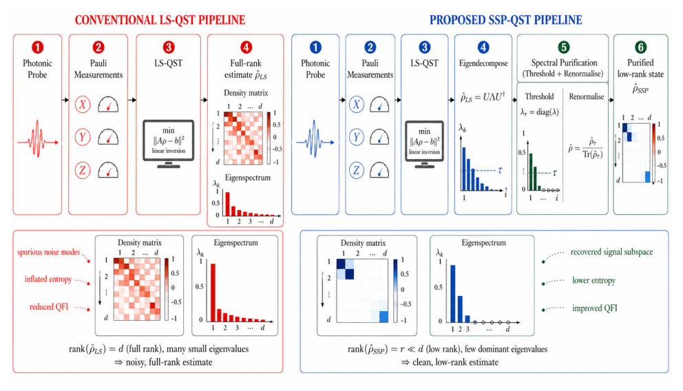
<figcaption class="paper-figure-caption"><b>Fig 1.</b> Fig. 1. Existing Pipelines vs. SSP-QST. Left: Conventional tomography reconstructs a photonic probe from Pauli measurements using LS-QST, producing a full- rank estimate ˆρ with noise-inflated eigenmodes, increased entropy, and reduced quantum Fisher information (QFI). Right: SSP-QST applies eigendecomposition, spectral thresholding, and renormalisation to the same LS-QST output, removing low-eigenvalue noise modes and recovering a low-rank purified estimate ρSSP with improved QFI.</figcaption>
</figure>
<figure class="paper-figure-card">
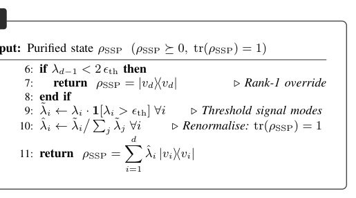
<figcaption class="paper-figure-caption"><b>Fig 2.</b> Fig. 2 shows the full closed-loop architecture. Photonic source imperfections fall into two categories that require differ- ent corrective mechanisms. Coherent drift, arising from wave- plate creep, electro-optic modulator (EOM) voltage offsets, and slow thermal phase shifts, displaces the control vector θ from its calibrated operating point and can be corrected by parameter adjustment. Incoherent noise, arising from photon loss and dephasing, randomises the probe state stochastically in each shot and cannot be undone by any classical post-processing. SSP-QST addresses both: it mitigates the reconstruction error induced by incoherent noise, and provides the fidelity gradient signal that the...</figcaption>
</figure>
<figure class="paper-figure-card">
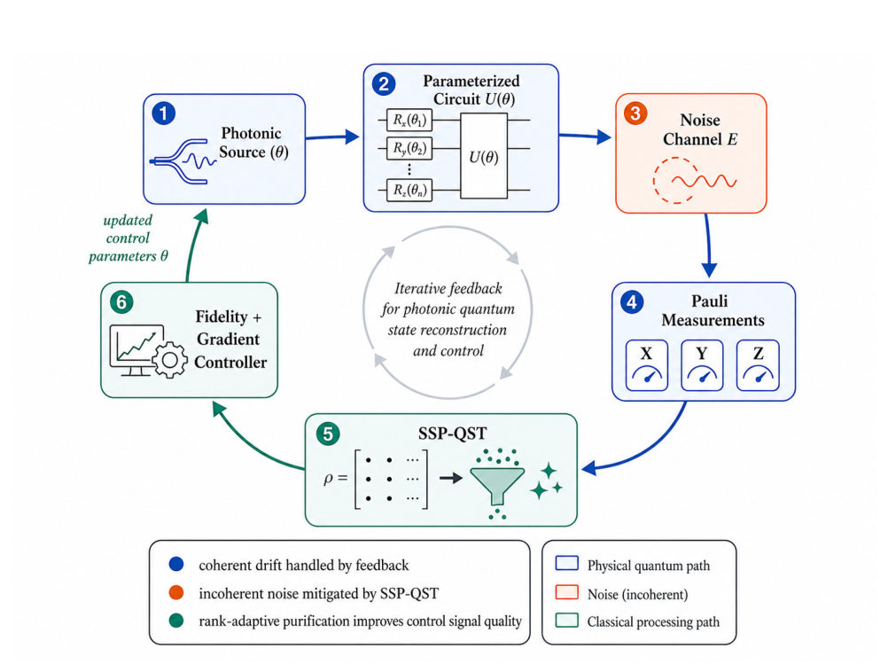
<figcaption class="paper-figure-caption"><b>Fig 3.</b> Fig. 2. Closed-loop system architecture. A parameterised photonic source prepares a probe state, which is corrupted by the noise channel E and measured across Pauli bases. The classical reconstruction module applies LS-QST followed by SSP-QST, then computes a parameter-shift fidelity gradient to update θ.</figcaption>
</figure>
<figure class="paper-figure-card">
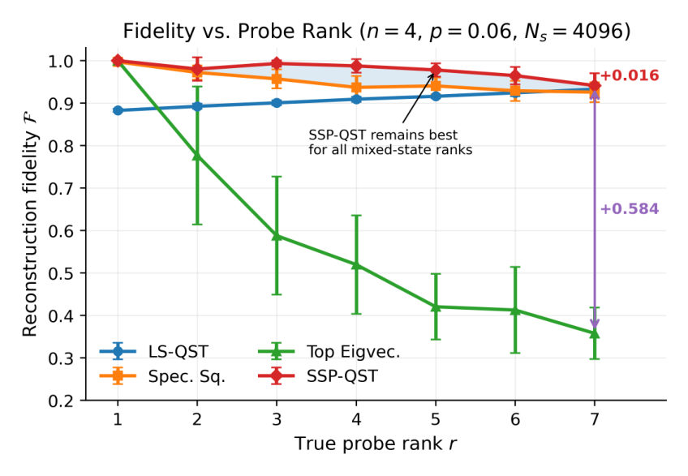
<figcaption class="paper-figure-caption"><b>Fig 4.</b> Fig. 3. Reconstruction fidelity versus true probe rank r for n = 4 qubits (d = 16), depolarising noise p = 0.06, Ns = 4096 shots per Pauli basis. Each point is averaged over 14 independently drawn rank-r states; error bars denote one standard deviation. The shaded region marks SSP-QST’s advantage over spectral squaring, the strongest non-iterative baseline in the mixed-state regime. SSP-QST matches the rank-1 top-eigenvector solution for pure probes and is the best method for every mixed-state rank tested.</figcaption>
</figure>
<figure class="paper-figure-card">
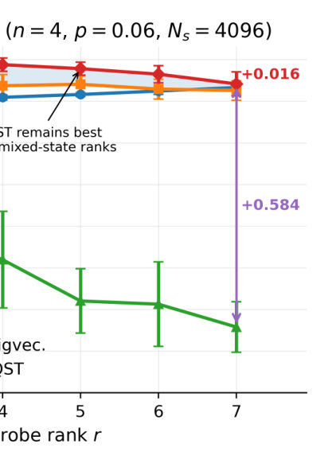
<figcaption class="paper-figure-caption"><b>Fig 5.</b> Fig. 4(b) demonstrates that this advantage is not an artefact of one operating point. We sweep the depolarising rate</figcaption>
</figure>
</div>

<p><strong>Summary.</strong> The paper introduces Spectral Subspace Purification (SSP-QST), a novel technique to clean up noisy density matrix estimates from photonic quantum state tomography. By adaptively thresholding eigenvalues based on a derived noise floor, SSP-QST avoids discarding valid signal information while removing measurement artifacts. This results in more reliable and efficient quantum sensing measurements.</p>
<p><strong>Why it may be interesting.</strong> This work provides a computationally lightweight, non-iterative post-processing tool for quantum state estimation in photonic systems, directly addressing the practical limitations of noise handling in quantum sensing protocols relevant to AMO physics and quantum optics.</p>
<details>
<summary>Detailed structure</summary>
<p><strong>Main problem.</strong> Standard Quantum State Tomography (QST) estimates suffer from eigenvalue contamination due to noise, which inflates entropy and reduces the usable Quantum Fisher Information. Furthermore, fixed rank-1 purification discards valid signal modes if the true state has a higher effective rank.</p>
<p><strong>Main result.</strong> The proposed SSP-QST method achieves the highest fidelity among non-iterative baselines by adaptively purifying the density matrix estimate while preserving valid signal modes for $r>1$ probes, significantly improving shot efficiency.</p>
<p><strong>Method.</strong> SSP-QST is a rank-adaptive post-processing layer applied to the least-squares QST estimate ($
ho_{LS}$). It eigendecomposes $
ho_{LS}$, estimates a noise floor using Weyl-motivated theory, removes modes below this threshold, and renormalizes the remaining subspace.</p>
<p><strong>Model / system.</strong> The work focuses on photonic quantum sensing utilizing low-rank entangled probes such as GHZ, Bell, and NOON states. The analysis is performed on the density matrix reconstruction ($\hat{
ho}$) derived from Pauli measurements.</p>
<p><strong>Key observables.</strong> Quantum Fisher Information (QFI), Reconstruction Fidelity, Eigenvalue Spectrum of $
ho_{LS}$, and the purified state $
ho_{SSP}$.</p>
<p><strong>Important parameters / regimes.</strong> Probe rank ($r$), finite-shot noise level, and the calculated spectral noise floor ($\epsilon_{th}$).</p>
<p><strong>Assumptions / limitations.</strong> The method requires no prior knowledge of the true rank, avoids iterative optimization, and relies only on a single eigendecomposition.</p>
<p><strong>Figures summary.</strong> Figure 1 compares conventional LS-QST (full-rank, noisy $\hat{
ho}$) against SSP-QST's purified estimate ($
ho_{SSP}$), showing improved QFI. Other figures validate performance across varying ranks and shot budgets.</p>
<p><strong>Paper structure.</strong> The paper first identifies the limitations of existing QST methods (LS-QST, fixed rank purification). It then introduces SSP-QST as a novel spectral thresholding technique derived from noise theory. Finally, it presents extensive simulations demonstrating superior fidelity and efficiency compared to all tested baselines.</p>
</details>
<details>
<summary>Abstract</summary>
<p>Photonic quantum sensing often uses low-rank entangled probes such as Greenberger-Horne-Zeilinger (GHZ), Bell, and NOON states. Although these probes are ideally rank-1, practical quantum state tomography (QST) can produce density-matrix estimates with many small finite-shot and noise-induced eigenmodes. This eigenvalue contamination can increase the estimated entropy of the reconstruction and reduce the quantum Fisher information (QFI) available for downstream sensing, while fixed rank-1 purification can discard valid signal modes when real probes acquire additional signal modes. We introduce Spectral Subspace Purification for Quantum State Tomography (SSP-QST), a rank-adaptive post-processing layer for least-squares quantum state tomography (LS-QST). SSP-QST eigendecomposes the least-squares estimate, computes a Weyl-motivated noise floor from the measured spectrum and shot count, removes eigenmodes below this floor, and renormalises the retained subspace. It requires no rank prior, no iterative optimisation, and only one eigendecomposition. In Qiskit Aer simulations, SSP-QST achieves the highest fidelity among the tested non-iterative baselines across the evaluated probe ranks, with a maximum fidelity gain of $+0.584$. It also improves shot efficiency by at least $8\times$ within the tested range. These results show that SSP-QST can make photonic QST more reliable under finite-shot noise while providing a lightweight reconstruction primitive for feedback-oriented quantum sensing pipelines.</p>
</details>
<p><sub><a href="#top">↑ back to top</a></sub></p>

<p><a id="paper-2607.22378"></a></p>
<h3 id="self-adjoint-extensions-of-math357math-photon-light-matter-hamiltonians"><a href="http://arxiv.org/abs/2607.22378v1">Self-adjoint extensions of $k$-photon light-matter Hamiltonians</a></h3>
<p><strong>Authors:</strong> Felix Fischer, Felix Knapp, Daniel Burgarth, Davide Lonigro<br>
<strong>Type:</strong> theory · <strong>Category:</strong> other · <strong>PDF:</strong> <a href="https://arxiv.org/pdf/2607.22378v1">https://arxiv.org/pdf/2607.22378v1</a><br>
<strong>Analysis basis:</strong> full PDF text, analyzed in chunks
<strong>Topic relevance:</strong> <code>correlated cavity matter</code> <strong>3/5</strong> · <code>Tavis-Cummings &amp; cavity-many-emitter</code> <strong>2/5</strong> · <code>Keldysh / 2PI / non-Gaussian methods</code> <strong>1/5</strong> · <code>analog quantum simulation</code> <strong>1/5</strong> · <code>driven-dissipative phase transition</code> <strong>1/5</strong> · <code>methods for driven-dissipative</code> <strong>1/5</strong></p>
<div class="figure-strip-hint">↔ Scroll figures horizontally</div>
<div class="paper-figures-scroll">
<figure class="paper-figure-card">
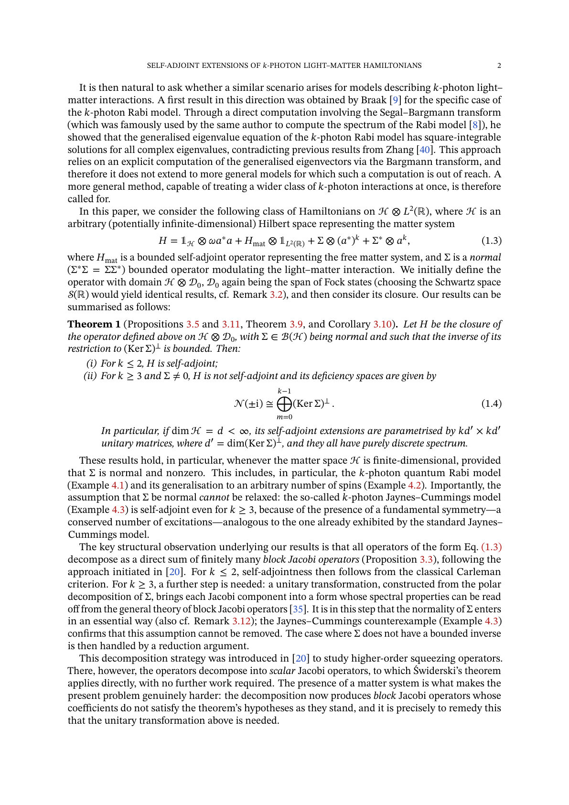
<figcaption class="paper-figure-caption"><b>Fig 1.</b> Low-resolution page preview, page 2</figcaption>
</figure>
<figure class="paper-figure-card">
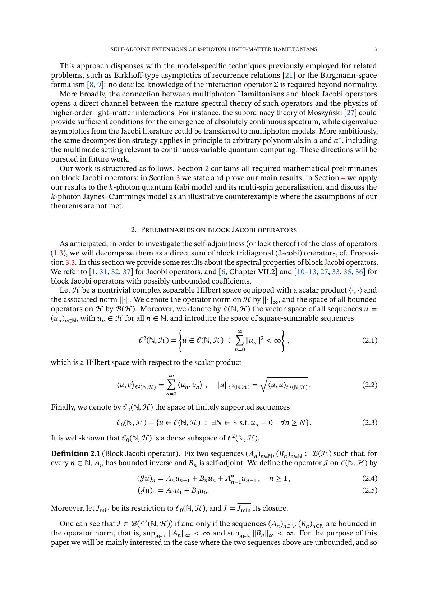
<figcaption class="paper-figure-caption"><b>Fig 2.</b> Low-resolution page preview, page 3</figcaption>
</figure>
<figure class="paper-figure-card">
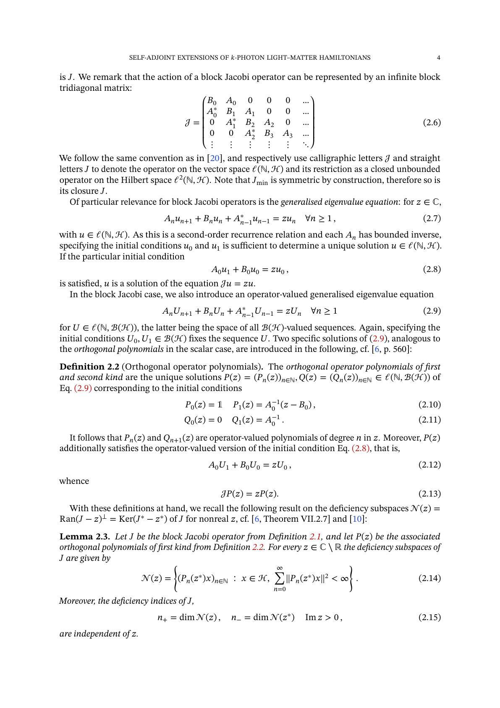
<figcaption class="paper-figure-caption"><b>Fig 3.</b> Low-resolution page preview, page 4</figcaption>
</figure>
<figure class="paper-figure-card">
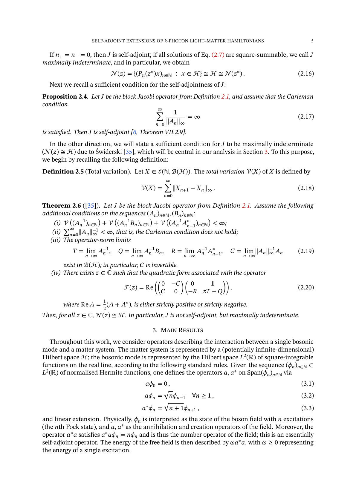
<figcaption class="paper-figure-caption"><b>Fig 4.</b> Low-resolution page preview, page 5</figcaption>
</figure>
<figure class="paper-figure-card">
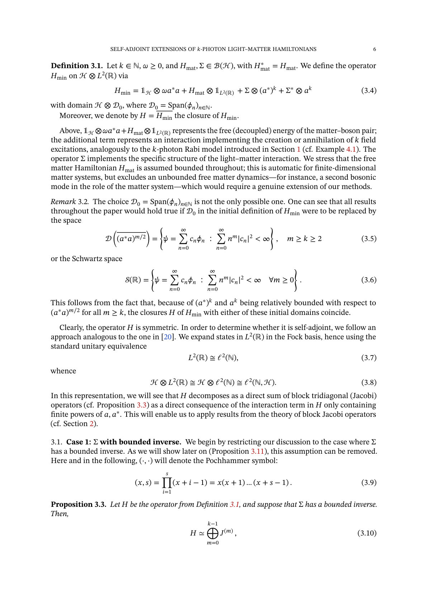
<figcaption class="paper-figure-caption"><b>Fig 5.</b> Low-resolution page preview, page 6</figcaption>
</figure>
</div>

<p><strong>Summary.</strong> This paper mathematically investigates $k$-photon light-matter interaction Hamiltonians, determining when they are self-adjoint operators. It proves that the Hamiltonian's mathematical properties change drastically depending on whether $k$ is less than or greater than three. The findings provide essential theoretical constraints for modeling nonlinear quantum optical processes.</p>
<p><strong>Why it may be interesting.</strong> This work provides rigorous mathematical tools to analyze quantum optical Hamiltonians that exhibit strong nonlinearity, which is crucial for understanding high-order light-matter coupling in cavity QED settings.</p>
<details>
<summary>Detailed structure</summary>
<p><strong>Main problem.</strong> The core problem is determining the self-adjoint extensions of Hamiltonians that describe nonlinear light-matter interactions involving the exchange of $k$ photons at a time.</p>
<p><strong>Main result.</strong> The Hamiltonian is guaranteed to be self-adjoint only for $k \le 2$ under specific conditions; for $k \ge 3$, multiple self-adjoint extensions exist, all possessing purely discrete spectra if the matter system is finite-dimensional.</p>
<p><strong>Method.</strong> The analysis employs advanced spectral theory techniques, including block Jacobi decomposition and utilizing properties derived from the polar decomposition of the coupling operator $\Sigma$.</p>
<p><strong>Model / system.</strong> The model describes a single bosonic mode coupled to an arbitrary quantum matter system ($\mathcal{H}$) via a $k$-photon interaction term. Examples include the $k$-photon Rabi and Dicke models.</p>
<p><strong>Key observables.</strong> Self-adjointness of the Hamiltonian, deficiency indices, and the spectrum (which is shown to be purely discrete for finite $\mathcal{H}$).</p>
<p><strong>Important parameters / regimes.</strong> $k$ (the number of exchanged photons), the coupling operator $\Sigma$, and the energy $\omega$ of a single excitation.</p>
<p><strong>Assumptions / limitations.</strong> The initial rigorous analysis often assumes that the coupling operator $\Sigma$ is normal ($\Sigma^* \Sigma = \Sigma \Sigma^*$).</p>
<p><strong>Paper structure.</strong> The paper establishes the general Hamiltonian form, analyzes its self-adjointness based on $k$, derives deficiency indices for non-self-adjoint cases ($k\ge3$), and illustrates results using specific models like the Rabi and Dicke systems.</p>
</details>
<details>
<summary>Abstract</summary>
<p>Multiphoton light-matter interactions, in which a bosonic mode exchanges $k$ excitations at a time with a quantum system, are a source of genuine nonlinearity in quantum optics and are increasingly accessible experimentally. Here we study the class of operators $H = H_{\rm mat}\otimes I + I\otimesωa^\ast a + Σ\otimes(a^\ast)^k + Σ^\ast\otimes a^k$ on $\mathcal{H}\otimes L^2(\mathbb{R})$, coupling a single bosonic mode to an arbitrary matter system through a bounded operator $Σ$. When $Σ$ is normal and nonzero, we prove that $H$ is self-adjoint if and only if $k\leq2$; for $k\geq3$ we compute the deficiency indices, parametrise all self-adjoint extensions, and show that every extension has purely discrete spectrum whenever the matter system is finite-dimensional. Our analysis rests on a block Jacobi decomposition paired with a suitable unitary transformation depending on the polar decomposition of $Σ$. The normality of $Σ$ is optimal: a $k$-photon Jaynes-Cummings model, with non-normal coupling, remains self-adjoint for every $k$. We illustrate our results on the $k$-photon Rabi and Dicke models.</p>
</details>
<p><sub><a href="#top">↑ back to top</a></sub></p>

<p><a id="paper-2607.22243"></a></p>
<h3 id="dark-polaron-theory-for-high-intensity-laser-cooling"><a href="http://arxiv.org/abs/2607.22243v1">Dark Polaron Theory for High Intensity Laser Cooling</a></h3>
<p><strong>Authors:</strong> Marcel Morillas-Rozas, Alberto López-García, Enamul Haque, Gonzalo Reina Rivero, Javier Cerrillo<br>
<strong>Type:</strong> theory · <strong>Category:</strong> other · <strong>PDF:</strong> <a href="https://arxiv.org/pdf/2607.22243v1">https://arxiv.org/pdf/2607.22243v1</a><br>
<strong>Analysis basis:</strong> full PDF text, analyzed in chunks
<strong>Topic relevance:</strong> <code>methods for driven-dissipative</code> <strong>3/5</strong> · <code>Keldysh / 2PI / non-Gaussian methods</code> <strong>1/5</strong> · <code>analog quantum simulation</code> <strong>1/5</strong> · <code>correlated / nonlocal dissipation</code> <strong>1/5</strong> · <code>driven-dissipative phase transition</code> <strong>1/5</strong> · <code>non-equilibrium dynamics</code> <strong>1/5</strong></p>
<div class="figure-strip-hint">↔ Scroll figures horizontally</div>
<div class="paper-figures-scroll">
<figure class="paper-figure-card">
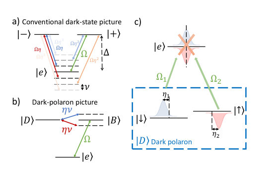
<figcaption class="paper-figure-caption"><b>Fig 1.</b> FIG. 1. (a) In the conventional EIT picture, laser couplings connect the dark state |−⟩to the excited state |e⟩through odd-order blue and red sidebands of coupling strengths pro- portional to Ωη2n+1. Carrier coupling of strength Ωand even- order blue and red sidebands of strengths proportional to Ωη2n connect the bright state |+⟩to the excited state |e⟩. (Not shown: High order effects additionally modulate cou- pling strengths in terms of Laguerre polynomials [16]). (b) Polaron picture of EIT only contains three couplings: a car- rier coupling of strength Ωbetween the bright polaron |B⟩and the excited state and the blue and red sidebands of strength ην connecting the dark polaron |D⟩to the...</figcaption>
</figure>
<figure class="paper-figure-card">
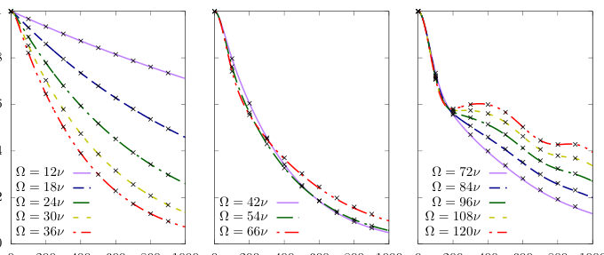
<figcaption class="paper-figure-caption"><b>Fig 2.</b> FIG. 2. Simulation of laser cooling dynamics for various values of Rabi frequency Ωusing both the original picture from Eq.(2) (lines) and the polaron picture from Eqs.(10,11) (crosses). Full agreement is reported in all three cooling regimes. On the left, laser cooling rate increases with Rabi frequency. In the center, a cross-over regime appears where the rate stays constant over a large range of Rabi frequencies. On the right, an underdamped regime arises, with pronounced oscillations and decreasing cooling rate as the Rabi frequency increases. Parameters: Γ = 10ν, η1 = −η2 = 1/ √</figcaption>
</figure>
<figure class="paper-figure-card">
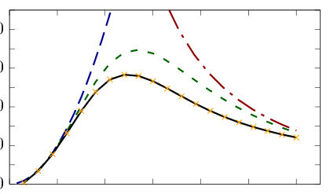
<figcaption class="paper-figure-caption"><b>Fig 3.</b> FIG. 3. Cooling rate as a function of Rabi frequency Ωfor the full master equation Eq.(15) in the original picture (solid black line), in the polaron picture (orange crosses), for rate equation Eq.(23) (dashed green line), for low intensity approx- imation Eq.(6) (long-dashed blue line) and for high intensity approximation Eq.(19) (dash-dotted red line). Parameters: Γ = 10ν, η1 = −η2 = 1/ √</figcaption>
</figure>
</div>

<p><strong>Summary.</strong> This paper introduces the dark polaron theory to address limitations in cooling trapped ions using high-intensity lasers. By transforming the system into a polaron basis, the authors derive an effective Hamiltonian that remains simple and linear even when conventional approximations break down. This provides a robust theoretical framework for understanding laser cooling dynamics under strong driving fields.</p>
<p><strong>Why it may be interesting.</strong> This work provides a powerful theoretical tool—the polaron approach—to analyze open quantum systems (trapped ions) operating under extreme conditions (high laser intensities), extending the applicability of standard quantum optics models.</p>
<details>
<summary>Detailed structure</summary>
<p><strong>Main problem.</strong> To overcome limitations of conventional laser control schemes for trapped ion cooling, which are restricted to weak laser intensities and small Lamb-Dicke parameters.</p>
<p><strong>Main result.</strong> The dark polaron theory successfully derives a description valid in the high-intensity limit, showing that the coupling between electronic and motional degrees of freedom remains linear and intensity-independent.</p>
<p><strong>Method.</strong> The authors employ a polaron transformation to map the system Hamiltonian into a simplified basis, allowing for the derivation of rate equations applicable beyond standard weak-coupling approximations.</p>
<p><strong>Model / system.</strong> The physical system is trapped ions undergoing laser cooling via Electromagnetically Induced Transparency (EIT) in a Lambda ($\Lambda$) configuration. The model involves coupling electronic states to vibrational modes using two Raman lasers.</p>
<p><strong>Key observables.</strong> Cooling rates, phonon population $\langle n 
angle$, and the dynamics of dark/bright polarons.</p>
<p><strong>Important parameters / regimes.</strong> Laser intensities (high intensity limit), Lamb-Dicke parameter ($\eta$), Rabi frequencies ($\Omega$), and spontaneous decay rates ($\Gamma$).</p>
<p><strong>Assumptions / limitations.</strong> The analysis assumes counter-propagating beams ($\eta_1 = -\eta_2 = \eta$) and utilizes the polaron basis to handle high-order coupling terms that vanish identically in this three-level system.</p>
<p><strong>Figures summary.</strong> Figure 2 compares dynamics simulated using the original Hamiltonian versus the simplified polaron picture across various cooling regimes, showing agreement. Other figures illustrate the dark/bright polaron states and rate dependencies on Rabi frequency.</p>
<p><strong>Paper structure.</strong> The paper first identifies the limitations of conventional treatments (Lamb-Dicke expansion). It then introduces the dark polaron basis via a transformation to simplify the Hamiltonian. Finally, it derives rate equations in this new picture, demonstrating its validity across all laser intensity regimes compared to full master equation simulations.</p>
</details>
<details>
<summary>Abstract</summary>
<p>Conventional laser control schemes for cooling and gate operation of trapped ions are limited to the regime of weak laser intensities and small Lamb-Dicke parameters. To overcome this limitation, we present the concept of dark polarons: spatially extended states of pseudospin polarization that are fully decoupled from a lambda laser configuration. In this picture, all high-order Lamb-Dicke terms collapse into a single linear coupling independent of laser intensity. We apply it to definitively elucidate the reasons behind cooling rate limitations observed in recent experimental implementations of electromagnetically induced transparency with high-intensity lasers.</p>
</details>
<p><sub><a href="#top">↑ back to top</a></sub></p>

<p><a id="paper-2607.21803"></a></p>
<h3 id="intrinsic-single-crystals-of-mnte-altermagnet"><a href="http://arxiv.org/abs/2607.21803v1">Intrinsic single crystals of MnTe altermagnet</a></h3>
<p><strong>Authors:</strong> Kim-Khuong Huynh, Michael Anthony Quintero, Martin Klanjšek, Tilen Knaflič, Yuta Ishii, Norimasa Sasabe, Nhu-Quynh T. Phan, Frej Søren Rattenborg, Yuichi Yamasaki, Denis Arčon, Bo Brummerstedt Iversen<br>
<strong>Type:</strong> experiment · <strong>Category:</strong> strongly correlated electrons · <strong>PDF:</strong> <a href="https://arxiv.org/pdf/2607.21803v1">https://arxiv.org/pdf/2607.21803v1</a><br>
<strong>Analysis basis:</strong> full PDF text, analyzed in chunks
<strong>Topic relevance:</strong> <code>spintronics-quantum-optics interface</code> <strong>3/5</strong> · <code>Kondo &amp; dissipative impurity</code> <strong>1/5</strong> · <code>analog quantum simulation</code> <strong>1/5</strong> · <code>exotic spin models in light-matter</code> <strong>1/5</strong> · <code>non-equilibrium dynamics</code> <strong>1/5</strong></p>
<div class="figure-strip-hint">↔ Scroll figures horizontally</div>
<div class="paper-figures-scroll">
<figure class="paper-figure-card">
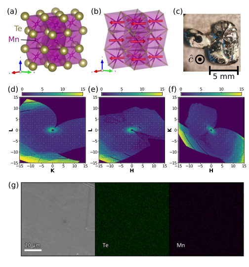
<figcaption class="paper-figure-caption"><b>Fig 1.</b> FIG. 1. Crystal quality. (a) Crystal structure of MnTe as obtained from the refinement of synchrotron SCXRD data. (b) AFM order with spin axis aligned along [010]-direction. (c) Single crystals of MnTe obtained from flux growth, af- ter washing by aqua regia. (d-f) Reconstructed SCXRD pre- cession images oriented along the [10¯10], [01¯10], and [0001] directions. (g) SEM-EDX result showing homogeneous distri- bution of stoichiometric Mn:Te composition.</figcaption>
</figure>
<figure class="paper-figure-card">
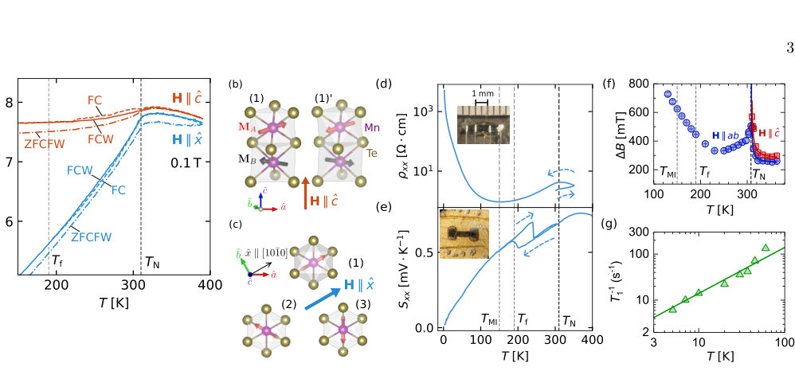
<figcaption class="paper-figure-caption"><b>Fig 2.</b> FIG. 2. Complex ALTM/AFM transition, domain degeneracy, and low-T insulating state. (a) Anisotropic superheating and supercooling hysteresis loops around TN exhibited by magnetic susceptibilities χcc(T) and χxx(T). The magnetic field parallel to c- and x-axes, as shown in (b) and (c), respectively. (b) and (c) illustrate the c- and in-plane degeneracy of domain orientations, respectively. The spin canting angle in (b) is exaggerated for clarity. (d-e) Hysteresis loops around TN and Anderson localization at low-T in the zero-field T-dependencies of resistivity ρxx(T) and the Seebeck coefficient Sxx(T). The dashed arrows indicate the cooling/warming processes, and the insets show the set-up...</figcaption>
</figure>
<figure class="paper-figure-card">
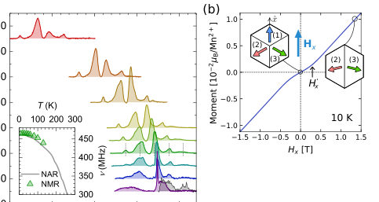
<figcaption class="paper-figure-caption"><b>Fig 3.</b> FIG. 3. Local probe of magnetic domain. (a) The colored bands in the main figure represent the 55Mn NMR spectra measured in a magnetic field of 0.5 T applied in the crystal ab plane at various temperatures. The vertical offset of each spectrum corresponds to its measurement temperature. For comparison, the spectrum recorded at 10 K and 0 T is shown in gray with an enhanced intensity. The vertical dashed lines mark the frequencies of the five transitions in the quadrupole- split I = 5/2 spectrum at 40 K. The inset compares the temperature dependence of the central-line frequency with the previously reported NAR [33]. (b) Magnetization versus Hx. The cartoons illustrate the depopulating...</figcaption>
</figure>
<figure class="paper-figure-card">
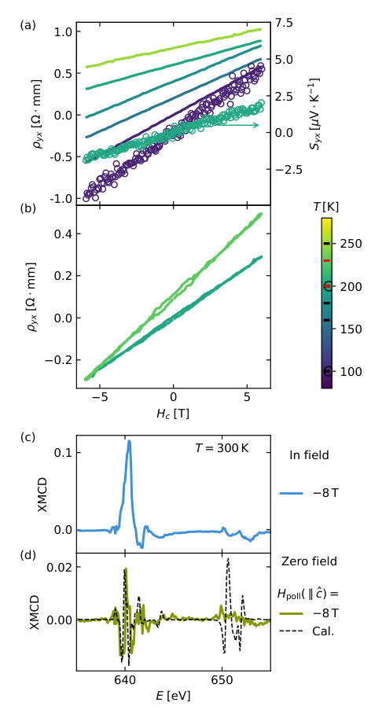
<figcaption class="paper-figure-caption"><b>Fig 4.</b> FIG. 4. ALTM hallmarks. (a) Hall (ρyx) and Nernst (Syx) effects at various temperatures. (b) Hysteresis loops associated with AHE observed in ρya(H) curves measured at T = 200 K and 230 K. A line (circle) on the color bar on the right indicates the temperature at which a ρyx (Syx) curve was measured. (c) Room temperature XMCD signals col- lected in H ∥c exhibit clear H-induced magnetizations. (d) Zero-field XMCD signals after polling at Hpoll = −8 T show- ing the ALTM spectral shape predicted by theory.</figcaption>
</figure>
</div>

<p><strong>Summary.</strong> This work reports on high-quality single crystals of MnTe to investigate its intrinsic altermagnetic properties. By using advanced measurements like EPR, NMR, and transport studies, the authors characterize complex domain kinetics near the magnetic transition and observe a low-temperature Anderson insulating state. The findings establish these materials as crucial platforms for studying strongly correlated phenomena in clean crystalline environments.</p>
<p><strong>Why it may be interesting.</strong> Although focused on condensed matter magnetism, the study's deep dive into domain dynamics, localization physics (Anderson insulator), and the interplay between magnetic order and charge carriers provides rich context for understanding correlated electron behavior in novel quantum materials.</p>
<details>
<summary>Detailed structure</summary>
<p><strong>Main problem.</strong> To study the intrinsic magnetic, electronic, and domain kinetics properties of MnTe, an archetypal altermagnet, by synthesizing ultra-high quality single crystals free from chemical imperfections.</p>
<p><strong>Main result.</strong> The synthesized crystals exhibit robust hallmarks of altermagnetism (AHE, XMCD) alongside complex anisotropic domain kinetics near the Néel temperature ($T_N$), and transition into an Anderson insulating state at lower temperatures.</p>
<p><strong>Method.</strong> The study employs a combination of advanced characterization techniques including transport measurements ($
ho(T)$, Seebeck coefficient), magnetic susceptibility, Electron Paramagnetic Resonance (EPR), and Nuclear Magnetic Resonance (NMR) on single crystals grown via self-flux methods.</p>
<p><strong>Model / system.</strong> The physical system is intrinsic single crystals of MnTe, which exhibits altermagnetism. The research probes the interplay between magnetic ordering, charge localization (Anderson insulating state), and structural/mechanical stress effects in this strongly correlated material.</p>
<p><strong>Key observables.</strong> Anomalous Hall effect (AHE) signals, anisotropic hysteresis loops in magnetic susceptibility ($\chi$), resistivity ($
ho_{xx}$), Seebeck coefficient ($S_{xx}$), EPR linewidth divergence near $T_N$, and Variable Range Hopping (VRH) behavior below $T_{	ext{MI}}$.</p>
<p><strong>Important parameters / regimes.</strong> Altermagnetic transition temperature ($T_N \approx 310\,\mathrm{K}$), Metal-Insulator Transition temperature ($T_{	ext{MI}} \approx 150\,\mathrm{K}$), and carrier density ($\sim 1.6	imes 10^{17}\,\mathrm{cm}^{-3}$).</p>
<p><strong>Assumptions / limitations.</strong> The primary assumption is that the synthesized crystals represent the intrinsic limit, minimizing extrinsic effects like Te-deficiency or mechanical stress.</p>
<p><strong>Figures summary.</strong> Figures illustrate crystal structure confirmation (SCXRD), anisotropic magnetic hysteresis loops around $T_N$, temperature dependence of transport properties ($
ho_{xx}, S_{xx}$), and EPR/NMR spectra showing domain-related broadening and changes across various transition temperatures.</p>
<p><strong>Paper structure.</strong> The paper systematically reports on the synthesis methodology to achieve high crystal quality, followed by detailed measurements covering magnetic transitions (domain kinetics via $\chi$), electronic transport ($
ho, S$), and local probes of magnetism/localization (EPR, NMR).</p>
</details>
<details>
<summary>Abstract</summary>
<p>We report the synthesis methodology, structure, and intrinsic properties of ultra-high quality single crystals of MnTe, an archetypal altermagnet. The crystals, obtained from self-flux method, are nearly free from crystal imperfections and disproportionate chemical compositions as seen by various investigation methods. In measurements under quasi free-standing configuration minimizing stress induced effects, the crystals exhibit complex and anisotropic domain kinetics in both superheating and supercooling regimes around the altermagnetic transition at $T_{\mathrm{N}} = 310\,\mathrm{K}$. An Anderson insulating state is observed below $T_{\mathrm{MI}}\approx 150\,\mathrm{K}$ with a carrier density of about $1.6\times 10^{17}\,\mathrm{cm}^{-3}$, being sharply contrast to metallic states usually seen in Te-deficit samples. Nevertheless, hallmarks of altermagnetism, anomalous Hall effect and X-ray magnetic circular dichroism signal, are robust in this intrinsic limit, however with significantly reduced magnitudes.</p>
</details>
<p><sub><a href="#top">↑ back to top</a></sub></p>

<p><a id="paper-2607.22138"></a></p>
<h3 id="capacitive-loading-in-two-dimensional-fluxonium-quantum-processors"><a href="http://arxiv.org/abs/2607.22138v1">Capacitive Loading in Two-dimensional Fluxonium Quantum Processors</a></h3>
<p><strong>Authors:</strong> Quan Guan, Guo Xuan Chan, Xu Dou, Chunqing Deng, Lijing Jin<br>
<strong>Type:</strong> theory · <strong>Category:</strong> quantum information and computing · <strong>PDF:</strong> <a href="https://arxiv.org/pdf/2607.22138v1">https://arxiv.org/pdf/2607.22138v1</a><br>
<strong>Analysis basis:</strong> full PDF text, analyzed in chunks
<strong>Topic relevance:</strong> <code>QC/QI experiment</code> <strong>2/5</strong> · <code>Keldysh / 2PI / non-Gaussian methods</code> <strong>1/5</strong> · <code>correlated / nonlocal dissipation</code> <strong>1/5</strong> · <code>driven-dissipative phase transition</code> <strong>1/5</strong> · <code>methods for driven-dissipative</code> <strong>1/5</strong></p>
<div class="figure-strip-hint">↔ Scroll figures horizontally</div>
<div class="paper-figures-scroll">
<figure class="paper-figure-card">
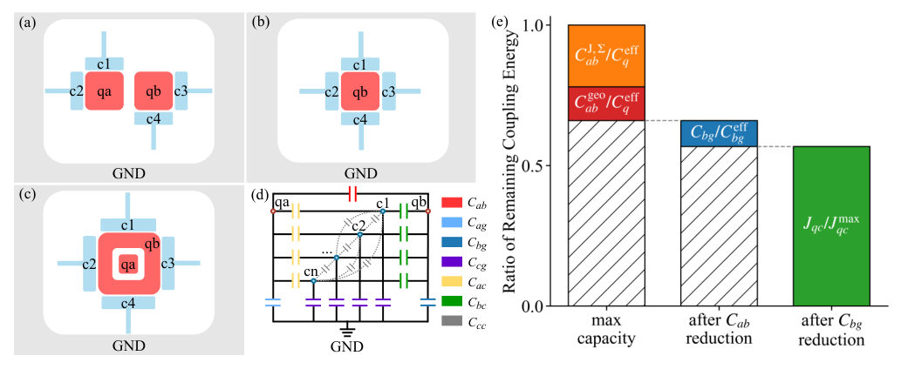
<figcaption class="paper-figure-caption"><b>Fig 1.</b> FIG. 1. Qubit–coupler coupling configurations, circuit model, and capacitive loading decomposition. Representative qubit–coupler coupling geometries: (a) Dumbbell floating qubit, with pads qa and qb coupled by 2 coupler pads each. (b) Grounded qubit [10], with pad qb coupled by 4 coupler pads. (c) Concentric floating qubit [11], with pad qb coupled by 4 coupler pads. (d) Equivalent circuit model of a floating qubit coupled by X couplers. (e) Decomposition of the maxi- mum achievable qubit–coupler capacitive coupling energy, Jmax qc = 4e2/(XCcg)ηqcηcc. Orange and red: The reduction fraction Cab/Ceff q induced by Cab, where Cab includes both the geometric pad-to-pad capacitance, Cgeo ab , and...</figcaption>
</figure>
<figure class="paper-figure-card">
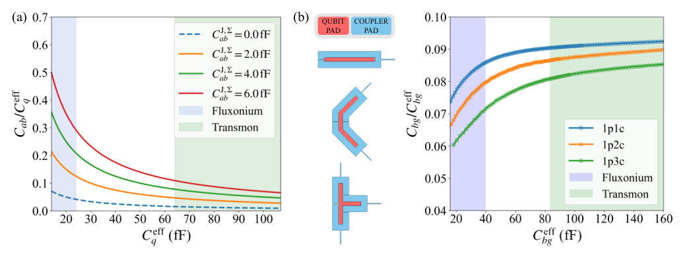
<figcaption class="paper-figure-caption"><b>Fig 2.</b> FIG. 2. Scaling behavior of the two critical capacitance participation ratios governing capacitive loading. (a) Inter-pad capacitance participation ratio Cab/Ceff q as a function of the qubit effective capacitance Ceff q , with the geometric contribution fixed at Cgeo ab = 1 fF. Increasing the junction parasitic capacitance CJ,Σ ab substantially increases Cab/Ceff q in the fluxonium regime, while having a much weaker effect in the transmon regime because of its larger capacitance budget. (b) Electromagnetically optimized layouts for one-pad-one-coupler (1p1c), one-pad-two-coupler (1p2c), and one-pad-three-coupler (1p3c) configurations, together with the corresponding pad-to-ground...</figcaption>
</figure>
<figure class="paper-figure-card">
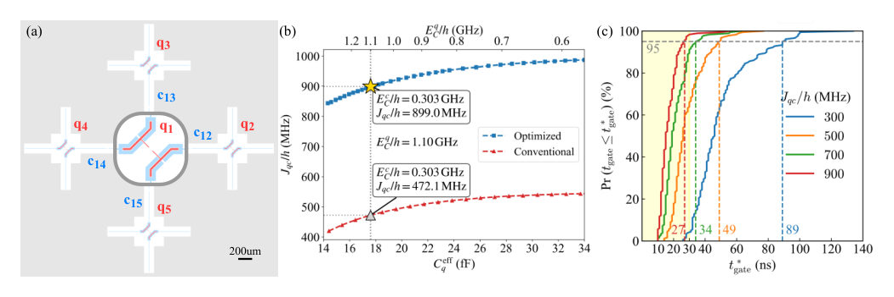
<figcaption class="paper-figure-caption"><b>Fig 3.</b> FIG. 3. Demonstration of the proposed design principles in a scalable fluxonium processor. (a) Unit cell of a two-dimensional grid fluxonium processor based on double-transmon couplers implementing the proposed capacitive loading mitigation strategy. cij stands for the double transmon coupler connecting qi and qj. (b) Achievable qubit–coupler coupling strength, Jqc, for the optimized and conventional layouts as a function of the qubit effective capacitance, Ceff q . The optimized design nearly doubles the achievable coupling while maintaining identical qubit and coupler charging energies. (c) Impact of enhanced qubit–coupler coupling on MAP-gate performance under 5% fabrication-induced...</figcaption>
</figure>
<figure class="paper-figure-card">
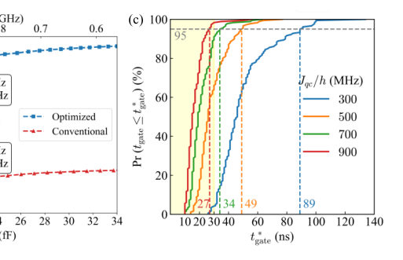
<figcaption class="paper-figure-caption"><b>Fig 4.</b> Fig. 3(b) shows qubit–coupler coupling strength Jqc, obtained through combining full-wave electromagnetic simulations with circuit-QED analysis, as a function of the qubit capacitance budget. Notably, an ultra- strong qubit–coupler coupling approaching 900 MHz is achieved. Achieving such large Jqc relies on two key strategies to mitigate capacitive loading: i) a lower junction-specific capacitance (hCJJ/EJ ≈0.6 fF/GHz),</figcaption>
</figure>
</div>

<p><strong>Summary.</strong> This paper addresses the critical challenge of capacitive loading when scaling fluxonium qubits to 2D arrays. By deriving analytical models based on capacitance budgets, the authors show that this loading can be mitigated through careful geometric engineering of the qubit-coupler layout. They demonstrate that high-fidelity gates are achievable in large processors by optimizing parasitic coupling paths.</p>
<p><strong>Why it may be interesting.</strong> This work provides concrete, physics-based engineering guidelines for scaling superconducting qubits by quantifying parasitic losses, which is crucial for realizing large quantum processors.</p>
<details>
<summary>Detailed structure</summary>
<p><strong>Main problem.</strong> Capacitive loading is a major obstacle preventing the scaling of fluxonium qubits from 1D to highly connected 2D architectures, and its physical origin remains poorly understood.</p>
<p><strong>Main result.</strong> The authors show that capacitive loading does not constitute a fundamental limit for 2D fluxonium quantum processors if proper design principles are followed by optimizing qubit-coupler geometry.</p>
<p><strong>Method.</strong> They derive analytical relations and use circuit QED analysis to model the coupling strength ($J_{qc}$) based on capacitance participation ratios, comparing optimized vs. conventional layouts.</p>
<p><strong>Model / system.</strong> The system is a fluxonium quantum processor extended to 2D arrays with double-transmon couplers (DTCs). The analysis uses circuit QED principles and Hamiltonian modeling for qubit-coupler interactions.</p>
<p><strong>Key observables.</strong> Achievable two-qubit gate coupling strength ($J_{qc}$), capacitive loading factors ($   ext{C}<em ext_eff="ext{eff">{    ext{ab}}/   ext{C}</em>}}^q$, $ ext{C<em ext_eff="ext{eff">{    ext{bg}}/   ext{C}</em>$), and gate infidelity ($\eta$).}}^{ ext{bg}</p>
<p><strong>Important parameters / regimes.</strong> Capacitance budget, coupling energy ($J_{qc}$), parasitic capacitances, and the minimum physical junction size.</p>
<p><strong>Assumptions / limitations.</strong> The leakage analysis assumes that the overall leakage probability is dominated by the most dominant parasitic transition path.</p>
<p><strong>Figures summary.</strong> Figures illustrate coupling geometries, show $J_{qc}$ vs. capacitance budgets comparing optimized to conventional layouts, and detail high-connectivity processor unit cells (e.g., 7q6c).</p>
<p><strong>Paper structure.</strong> The paper progresses from deriving the fundamental analytical relations governing capacitive loading in simple models, to developing quantitative design principles using participation ratios, and finally demonstrating these principles on complex, high-connectivity 2D architectures while analyzing gate fidelity.</p>
</details>
<details>
<summary>Abstract</summary>
<p>Capacitive loading has emerged as a major obstacle to scaling fluxonium qubits from one-dimensional to highly connected two-dimensional (2D) architectures, yet its physical origin remains poorly understood. We derive an analytical relation between the qubit capacitance budget and the achievable capacitive coupling to external circuit elements, identifying the parasitic capacitances of Josephson junctions and Josephson junction arrays as the dominant source of capacitive loading while showing that the qubit-pad geometry can instead be engineered to mitigate it. Building on these insights, we formulate practical design principles and numerically demonstrate ultrafast, high-fidelity two-qubit gates in 2D fluxonium architectures. Our results reveal that capacitive loading does not constitute a fundamental limit for 2D fluxonium quantum processors.</p>
</details>
<p><sub><a href="#top">↑ back to top</a></sub></p>

<p><a id="paper-2607.21698"></a></p>
<h3 id="non-invertible-symmetries-mixing-with-witt-non-trivial-quantum-cellular-automata"><a href="http://arxiv.org/abs/2607.21698v1">Non-Invertible Symmetries Mixing with Witt Non-Trivial Quantum Cellular Automata</a></h3>
<p><strong>Authors:</strong> Kansei Inamura, Oskar Wojdel, Lukasz Fidkowski, Sakura Schafer-Nameki<br>
<strong>Type:</strong> theory · <strong>Category:</strong> strongly correlated electrons · <strong>PDF:</strong> <a href="https://arxiv.org/pdf/2607.21698v1">https://arxiv.org/pdf/2607.21698v1</a><br>
<strong>Analysis basis:</strong> full PDF text, analyzed in chunks
<strong>Topic relevance:</strong> <code>analog quantum simulation</code> <strong>2/5</strong> · <code>Keldysh / 2PI / non-Gaussian methods</code> <strong>1/5</strong> · <code>driven-dissipative phase transition</code> <strong>1/5</strong> · <code>entanglement &amp; information structure</code> <strong>1/5</strong> · <code>exotic spin models in light-matter</code> <strong>1/5</strong></p>
<div class="figure-strip-hint">↔ Scroll figures horizontally</div>
<div class="paper-figures-scroll">
<figure class="paper-figure-card">
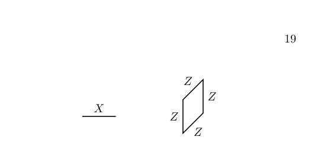
<figcaption class="paper-figure-caption"><b>Fig 1.</b> Figure 6. The generators of the algebra of Z2 1-form sym- metric local operators. Here, the solid lines represent edges of the dual lattice.</figcaption>
</figure>
<figure class="paper-figure-card">
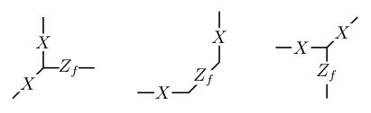
<figcaption class="paper-figure-caption"><b>Fig 2.</b> Figure 10. The fermion hopping operator ˜uf illustrated on the dual lattice.</figcaption>
</figure>
<figure class="paper-figure-card">
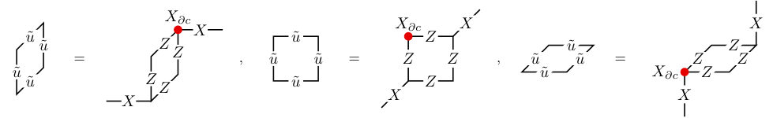
<figcaption class="paper-figure-caption"><b>Fig 3.</b> Figure 11. The fermion flux operator ˜uδe illustrated on the dual lattice. The red dot represents the dual of cube c where the operator X∂c acts. We recall our convention that Pauli X’s act before Pauli Z’s.</figcaption>
</figure>
<figure class="paper-figure-card">
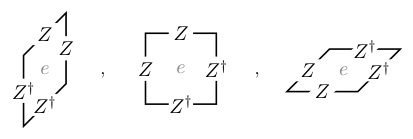
<figcaption class="paper-figure-caption"><b>Fig 4.</b> Figure 15. The flux operator Zδe for each edge e. Here, the plaquette in each diagram represents the dual of e.</figcaption>
</figure>
<figure class="paper-figure-card">
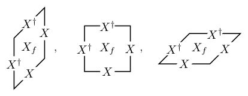
<figcaption class="paper-figure-caption"><b>Fig 5.</b> Figure 16. The Gauss law operator Gf illustrated on the direct lattice. Here, the middle plaquette in each diagram represents face f.</figcaption>
</figure>
</div>

<p><strong>Summary.</strong> This theoretical paper investigates how non-invertible symmetries, particularly those involving duality, manifest on quantum lattices. By comparing continuum predictions from Witt group theory with explicit constructions using Quantum Cellular Automata, the authors characterize the underlying algebraic structure governing these exotic symmetries in 3+1 dimensions.</p>
<p><strong>Why it may be interesting.</strong> It provides a deep connection between abstract algebraic structures (Witt groups) and concrete physical realizations in lattice models (QCA), which is crucial for understanding topological order beyond simple symmetry protection.</p>
<details>
<summary>Detailed structure</summary>
<p><strong>Main problem.</strong> The paper addresses constructing a lattice framework for non-invertible symmetries, particularly those involving duality operations, in quantum many-body systems.</p>
<p><strong>Main result.</strong> It establishes that the group of locality-preserving automorphisms on the lattice matches predictions from advanced categorical calculations (the pointed Witt group), identifying specific Quantum Cellular Automata (QCA) generators for these symmetries.</p>
<p><strong>Method.</strong> The authors use algebraic methods, comparing continuum defect relations derived from the graded Witt group with explicit constructions using local operator algebras and QCA acting on spin lattices.</p>
<p><strong>Model / system.</strong> The study focuses on quantum many-body systems exhibiting a Zp one-form symmetry in 3+1 dimensions. The mathematical machinery involves analyzing automorphisms of constrained local spin operator algebras built upon a cubic lattice structure.</p>
<p><strong>Key observables.</strong> The group structure of locality-preserving automorphisms, which is related to the Clifford group for p=2 and SL(2, Zp) for odd primes p.</p>
<p><strong>Important parameters / regimes.</strong> The symmetry parameter p (prime), the dimensionality (3+1d), and the specific form of the symmetry ($\mathbb{Z}_p$ 1-form).</p>
<p><strong>Assumptions / limitations.</strong> The analysis relies on conjectures regarding the full group of automorphisms modulo finite depth circuits, and some proofs are noted to fall short of rigor.</p>
<p><strong>Figures summary.</strong> Not specified in detail, but notes reference Tables I and II comparing continuum defect theory relations with lattice operators (KWW, TW).</p>
<p><strong>Paper structure.</strong> The paper progresses by first defining the symmetry problem using $\mathbb{Z}_p$ 1-form symmetries, then calculating the expected group structure via Witt groups, and finally realizing this structure microscopically through specific Quantum Cellular Automata acting on local operator algebras.</p>
</details>
<details>
<summary>Abstract</summary>
<p>Self-dualities and the stacking of symmetry-protected topological (SPT) phases are basic operations on quantum many-body systems. For a $\mathbb{Z}_p$ one-form symmetry in 3+1d these correspond to the Kramers-Wannier-Wegner duality $S$, which is the gauging operation underlying non-invertible duality symmetries, and the stacking of a 1-form symmetry SPT $T$. In the continuum, they form a central extension of $PSL(2,\mathbb{Z}_4)$ for $p=2$, and of $SL(2,\mathbb{Z}_p)$ for odd primes $p$, whose central elements are invertible theories with purely gravitational response. These central extensions are governed by a twisted, graded generalization of the Witt group of abelian anyon theories, which we determine. For $p=2$ the resulting group is the single-qubit Clifford group, with duality and entangler acting as the Hadamard and phase gates. We realize this entire structure microscopically as quantum cellular automata (QCA) acting on a certain local operator algebra associated with a spin lattice Hilbert space on a cubic lattice. Specifically, our local operator algebra is built by starting with all local operators commuting with a $\mathbb{Z}_p$ 1-form symmetry, and taking the quotient by all the (local) 1-form symmetry generators. The central elements can always be extended to the full tensor product algebra with a uniquely defined QCA class. For $p=2$ they are generated by the non-trivial semion QCA, and for odd prime $p$ they are generated by the non-trivial $\mathbb{Z}_p$ Clifford QCA. Consequently the lattice fusion rules reproduce the continuum ones only up to these QCAs and lattice translations, giving rise to fusion rules refined by QCAs.</p>
</details>
<p><sub><a href="#top">↑ back to top</a></sub></p>

<p><a id="paper-2607.21995"></a></p>
<h3 id="qc-phast-search-classical-quantum-query-benchmarks-for-finite-pool-rare-regime-discovery"><a href="http://arxiv.org/abs/2607.21995v1">QC-PHAST Search: Classical--Quantum Query Benchmarks for Finite-Pool Rare-Regime Discovery</a></h3>
<p><strong>Authors:</strong> Harsh Milind Tirhekar, Chandrajit Bajaj<br>
<strong>Type:</strong> theory · <strong>Category:</strong> other · <strong>PDF:</strong> <a href="https://arxiv.org/pdf/2607.21995v1">https://arxiv.org/pdf/2607.21995v1</a><br>
<strong>Analysis basis:</strong> full PDF text, analyzed in chunks
<strong>Topic relevance:</strong> <code>driven-dissipative phase transition</code> <strong>2/5</strong> · <code>analog quantum simulation</code> <strong>1/5</strong> · <code>methods for driven-dissipative</code> <strong>1/5</strong> · <code>non-equilibrium dynamics</code> <strong>1/5</strong> · <code>non-equilibrium universality</code> <strong>1/5</strong></p>
<div class="figure-strip-hint">↔ Scroll figures horizontally</div>
<div class="paper-figures-scroll">
<figure class="paper-figure-card">
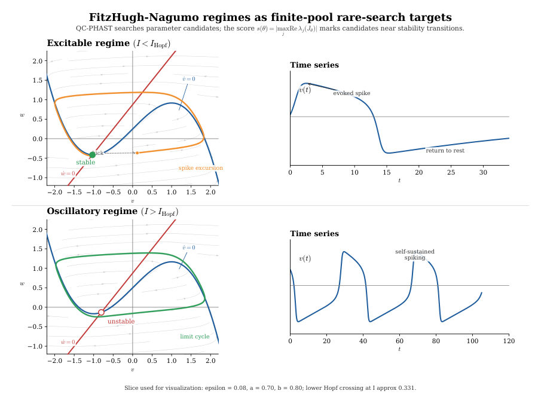
<figcaption class="paper-figure-caption"><b>Fig 1.</b> Figure 1: FHN regime bridge. QC-PHAST searches parameter candidates, and each candidate induces a phase portrait, equilibrium stability, trajectory response, and voltage trace. In the excitable regime, a stable equilibrium returns to rest after a perturbation-driven spike; in the oscil- latory regime, the equilibrium is unstable and trajectories approach a limit cycle. The benchmark score minimizes | maxj Re λj(JFHN)| over relevant equilibria; this slice visualizes one such stability transition and gives a concrete phase-space meaning to the finite-pool rare-regime predicate.</figcaption>
</figure>
<figure class="paper-figure-card">
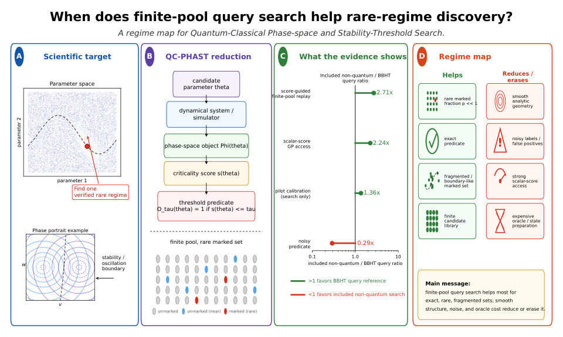
<figcaption class="paper-figure-caption"><b>Fig 2.</b> Figure 2: A regime map for Quantum-Classical Phase-space and Stability-Threshold Search. Panel A frames rare-regime discovery as finding one verified parameter near a phase-space transition. Panel B shows the reduction from candidate parameter to simulator, phase-space object, criticality score, threshold predicate, and finite marked set. Panel C reports selected included non-quantum / BBHT query-count ratios, where values above one favor the BBHT query reference and values below one favor included non-quantum search. The first row is the exact finite-pool replay with scalable score-guided baselines; BBHT itself has exact binary marked-oracle access. Its pilot point is a...</figcaption>
</figure>
<figure class="paper-figure-card">
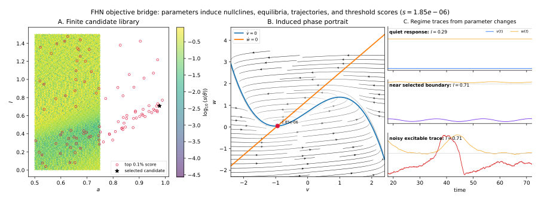
<figcaption class="paper-figure-caption"><b>Fig 3.</b> Figure 3: FHN objective bridge generated from the saved stress dataset. Left: QC-PHAST searches parameter candidates; red outlines mark the top 0.1% score set under the FHN stability-boundary score. Right: the selected parameter vector induces a phase portrait with v- and w-nullclines, an equilibrium, and a near-zero leading real Jacobian eigenvalue. The figure illustrates the mapping θ 7→Φθ 7→s(θ) 7→Oτ(θ) used throughout the benchmark.</figcaption>
</figure>
<figure class="paper-figure-card">
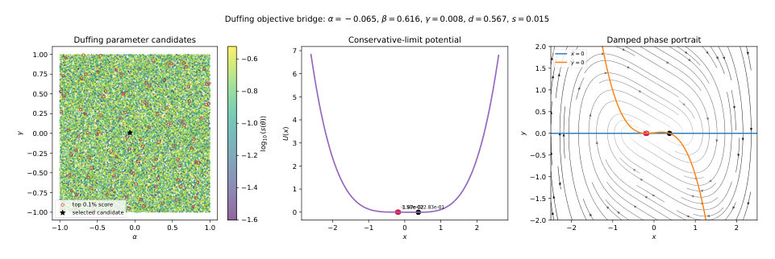
<figcaption class="paper-figure-caption"><b>Fig 4.</b> Figure 4: Duffing objective bridge generated from the saved stress dataset. Left: parameter can- didates projected onto (α, γ) with the top 0.1% score set highlighted. Middle: conservative-limit potential for the selected parameter vector, with real equilibria annotated by leading real Jacobian eigenvalue. Right: damped phase portrait and nullclines. This second worked example shows the same QC-PHAST map as FHN: parameter candidate θ, induced phase-space structure, stability score, and marked rare-regime predicate.</figcaption>
</figure>
<figure class="paper-figure-card">
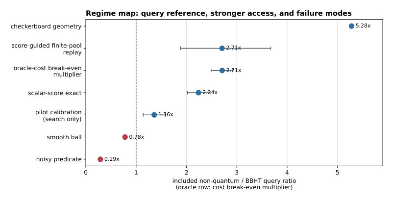
<figcaption class="paper-figure-caption"><b>Fig 5.</b> Figure 5: Forest view of the main regime map. Values above one favor the Boyer–Brassard– Høyer–Tapp (BBHT) marked-set query reference in verified first-hit query count, except for the oracle-cost row, which reports the maximum per-oracle cost multiplier that preserves parity with the included non-quantum baseline. The figure shows query-count and break-even diagnostics only, not simulator or quantum-hardware runtime. Geometry and access-model rows explain when the finite-pool query reference is meaningful and when it should be bypassed.</figcaption>
</figure>
</div>

<p><strong>Summary.</strong> This paper introduces QC-PHAST, a formal protocol designed to guide the search for rare physical regimes within parameterized dynamical systems. It rigorously compares the potential efficiency gains of quantum query models (like Grover's algorithm) against classical simulation methods by accounting for noise and data access limitations. The work provides a decision framework rather than a single solution, helping researchers understand when advanced computational resources are truly necessary.</p>
<p><strong>Why it may be interesting.</strong> While not directly about AMO physics, the rigorous framework for determining when advanced computational tools (like quantum queries) provide a genuine advantage over classical simulation/optimization techniques in complex physical modeling is highly relevant to developing robust theoretical tools for open quantum systems analysis.</p>
<details>
<summary>Detailed structure</summary>
<p><strong>Main problem.</strong> The paper addresses rare-regime discovery in parameterized dynamical systems: finding a specific parameter value where a qualitative physical threshold is crossed, especially when such parameters are scarce or complex.</p>
<p><strong>Main result.</strong> It develops QC-PHAST, an auditable protocol that determines the optimal search strategy (quantum vs. classical) by quantifying the advantage of quantum query models against classical simulation costs and noise.</p>
<p><strong>Method.</strong> The methodology introduces QC-PHAST, an evidence-gated decision protocol that compares theoretical quantum query complexity (using Grover/BBHT benchmarks) against practical metrics derived from dynamical system simulations.</p>
<p><strong>Model / system.</strong> The framework is tested using parameterized dynamical systems, with the FitzHugh-Nagumo (FHN) system serving as a canonical reduced model for excitable dynamics. The search space involves varying parameters that govern phase portraits and stability.</p>
<p><strong>Key observables.</strong> Simulator-derived criticality score ($s(\mathbf{x}_i)$), verified first-hit predicates, and the ratio of non-quantum to BBHT query counts are key diagnostics.</p>
<p><strong>Important parameters / regimes.</strong> The rarity/density of acceptable candidates (marked set size $M$ relative to total pool size $N$), noise levels in measurements, and the specific dynamical system parameters ($\epsilon, a, b$, etc.).</p>
<p><strong>Assumptions / limitations.</strong> The quantum reference is treated purely as a theoretical query-count benchmark, not claiming physical circuit implementation or hardware speedup. The protocol itself is an auditable decision rule.</p>
<p><strong>Figures summary.</strong> Figure 1 illustrates FHN regimes and the search process; Figure 2 maps the scientific objective onto measurable components (object, score, predicate); Table 1 summarizes how different dynamical features relate to active-search implications.</p>
<p><strong>Paper structure.</strong> The paper defines the rare-regime discovery problem, introduces QC-PHAST as a decision protocol, details the comparison between quantum query models and classical search methods using quantitative benchmarks (e.g., 875-configuration sweeps), and concludes by establishing the conditions under which each search paradigm is most informative.</p>
</details>
<details>
<summary>Abstract</summary>
<p>Rare-regime discovery in parameterized dynamical systems is an active-search problem: find one verified parameter at which a scientifically defined qualitative threshold is crossed, even when acceptable candidates are rare, nonconvex, or fragmented. We introduce Quantum-Classical Phase-space and Stability-Threshold Search (QC-PHAST), an evidence-gated decision protocol and query-accounting framework for finite candidate libraries. A candidate induces a dynamical object, simulator-derived criticality score, and verified first-hit predicate. Scientific metadata and charged pilot evidence are used to assess whether equation-aware search, scalar-score active search, predicate-only search, or only a query-model comparison is admissible. The quantum row is the inherited Grover/Boyer--Brassard--Hoyer--Tapp (BBHT) unknown-$M$ marked-set query reference; it is not a new quantum-search theorem, materialized circuit, or hardware-speedup claim. The result is a regime map. Direct boundary constructions, geometry controls, online simulator loops, and learned-label accounting further identify when classical structure, false positives, calibration cost, or state preparation erases the query-model margin. QC-PHAST is therefore an auditable protocol for deciding when a finite-pool marked-set reference is informative and when classical or resource-aware search should dominate.</p>
</details>
<p><sub><a href="#top">↑ back to top</a></sub></p>

<p><a id="paper-2607.22498"></a></p>
<h3 id="automated-flag-based-fault-tolerant-state-preparation-using-integer-linear-programming"><a href="http://arxiv.org/abs/2607.22498v1">Automated Flag-based Fault-Tolerant State Preparation using Integer Linear Programming</a></h3>
<p><strong>Authors:</strong> Ben Criger, Aaron Hankin, Justin J. Burau, Abigail R. Perry<br>
<strong>Type:</strong> both · <strong>Category:</strong> quantum information and computing · <strong>PDF:</strong> <a href="https://arxiv.org/pdf/2607.22498v1">https://arxiv.org/pdf/2607.22498v1</a><br>
<strong>Analysis basis:</strong> full PDF text, analyzed in chunks
<strong>Topic relevance:</strong> <code>QC/QI experiment</code> <strong>2/5</strong> · <code>entanglement &amp; information structure</code> <strong>1/5</strong> · <code>methods for driven-dissipative</code> <strong>1/5</strong> · <code>quantum measurements</code> <strong>1/5</strong></p>
<div class="figure-strip-hint">↔ Scroll figures horizontally</div>
<div class="paper-figures-scroll">
<figure class="paper-figure-card">
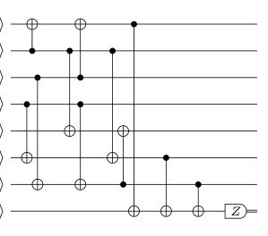
<figcaption class="paper-figure-caption"><b>Fig 1.</b> FIG. 1. From [7]; a circuit for fault-tolerant |0⟩state prepara- tion for the J7, 1, 3K Steane code, incorporating measurement of a single weight-3 operator to achieve a total operation count of 12.</figcaption>
</figure>
<figure class="paper-figure-card">
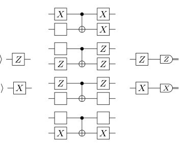
<figcaption class="paper-figure-caption"><b>Fig 2.</b> FIG. 3. Elements of a generating set for the gauge group of a circuit comprised of CNots, |0⟩/|+⟩preparations, and Z/X- basis measurements.</figcaption>
</figure>
<figure class="paper-figure-card">
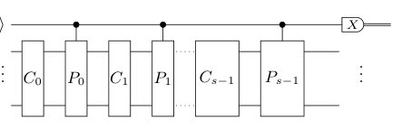
<figcaption class="paper-figure-caption"><b>Fig 3.</b> FIG. 4. A circuit incorporating a flag measurement, com- posed of s Clifford stages {C0, C1, . . . , Cs−1}, interleaved with controlled-Pauli gates {P0, P1, . . . , Ps−1}, with the con- trol qubit initially prepared in the |+⟩state, and finally mea- sured in the X basis.</figcaption>
</figure>
<figure class="paper-figure-card">
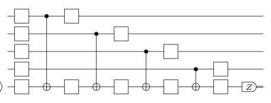
<figcaption class="paper-figure-caption"><b>Fig 4.</b> FIG. 2. A subcircuit measuring Z⊗4, with locations repre- sented using empty boxes. Note that this set of locations, while capable of describing the support of any fault caused by a faulty operation, does not have support on every qubit at every point in time, as in [13].</figcaption>
</figure>
<figure class="paper-figure-card">
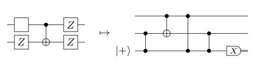
<figcaption class="paper-figure-caption"><b>Fig 5.</b> FIG. 5. Example of gauge-operator-to-flag-circuit mapping.</figcaption>
</figure>
</div>

<p><strong>Summary.</strong> This paper presents an automated method to design highly reliable circuits for preparing specific quantum states required in fault-tolerant quantum computing. By modeling the problem as an Integer Linear Program using circuit gauge operators, the authors achieve state preparation circuits with minimal gate counts while rigorously guaranteeing detection of multiple error types. This work demonstrates a significant step toward practical implementation on current quantum hardware.</p>
<p><strong>Why it may be interesting.</strong> While focused on computation, the rigorous mathematical framework involving graph theory, linear programming, and error detection mechanisms provides deep insights into the structure of fault-tolerant quantum information processing protocols.</p>
<details>
<summary>Detailed structure</summary>
<p><strong>Main problem.</strong> The core problem is developing automated, fault-tolerant methods for preparing stabilizer states, which is a crucial subroutine in quantum error correction and initializing logical qubits.</p>
<p><strong>Main result.</strong> The authors successfully optimize state preparation circuits using Integer Linear Programming (ILP) based on the circuit gauge operator formalism, achieving low gate counts while maintaining high levels of fault detection capability.</p>
<p><strong>Method.</strong> They formulate the problem as finding a minimum-cost set cover by solving an ILP, which determines the necessary gauge operators to ensure that any error pattern is detectable or results in a distinguishable output error.</p>
<p><strong>Model / system.</strong> The work applies to general quantum error-correcting codes (e.g., Steane code, two-block group algebra codes) and is tested on physical hardware platforms like Quantinuum's System Model H2.</p>
<p><strong>Key observables.</strong> Logical block error rate ($\sim 10^{-4}$), circuit gate count, weight of gauge operators, and the ability to detect specific numbers of faults (e.g., up to three errors).</p>
<p><strong>Important parameters / regimes.</strong> Code distance ($d$), number of qubits/blocks, and the cost function derived from operator weights.</p>
<p><strong>Assumptions / limitations.</strong> The primary assumption is that expressing fault detection as a weighted set cover solvable by ILP provides an optimal or near-optimal circuit construction compared to existing state-of-the-art methods.</p>
<p><strong>Figures summary.</strong> Figures illustrate various state preparation circuits for multiple QEC codes (e.g., J16, J24), demonstrating how the designed flag measurements detect single and pairs of faults.</p>
<p><strong>Paper structure.</strong> The paper introduces the necessity of fault-tolerant state preparation, details the gauge operator formalism, formulates the optimization as an ILP, presents results comparing gate counts to SOTA methods across various codes, and concludes with hardware testing on a specific quantum computer model.</p>
</details>
<details>
<summary>Abstract</summary>
<p>Post-selected stabilizer state preparation is a necessary subroutine in fault-tolerant quantum computation, both for initialization of logical qubits, and for logical-ancilla-based error correction gadgets (e.g. Steane and Knill). Therefore, reducing the number of gates needed to prepare a stabilizer state fault-tolerantly can simultaneously reduce time-to-solution and increase reliability. For small, low-distance codes such as the [[7, 1, 3]] Steane code, circuits with low gate counts can be found by inspection. This becomes impractical for larger codes, necessitating automation. There are two state-of-the-art methods for automated fault-tolerant state preparation, SAT-based stabilizer measurement and flag-at-origin. In this work, we optimize state preparation circuits using the circuit gauge operator formalism to express the construction of flag circuits as an integer linear program. This allows the construction of circuits with equal or lower gate count than the state of the art, while detecting up to three errors. We use this technique to derive a Steane error correction gadget for the [[24, 10, 4]] two-block group algebra code, and test it on Quantinuum's System Model H2 quantum computer with 10,000 shots, resulting in a logical block error rate ~0.00014 (~0.000014 per logical qubit), with ~1.6% of the shots post-selected due to weight-two errors.</p>
</details>
<p><sub><a href="#top">↑ back to top</a></sub></p>

<p><a id="paper-2607.22516"></a></p>
<h3 id="quantum-spectral-model-data-reuploading-with-input-conditioned-frequency-support"><a href="http://arxiv.org/abs/2607.22516v1">Quantum Spectral Model: Data Reuploading with Input-Conditioned Frequency Support</a></h3>
<p><strong>Authors:</strong> Peiyong Wang, Udaya Parampalli, Casey R. Myers<br>
<strong>Type:</strong> both · <strong>Category:</strong> disordered systems and neural networks · <strong>PDF:</strong> <a href="https://arxiv.org/pdf/2607.22516v1">https://arxiv.org/pdf/2607.22516v1</a><br>
<strong>Analysis basis:</strong> full PDF text, analyzed in chunks
<strong>Topic relevance:</strong> <code>analog quantum simulation</code> <strong>2/5</strong> · <code>correlated cavity matter</code> <strong>1/5</strong> · <code>driven-dissipative phase transition</code> <strong>1/5</strong> · <code>entanglement &amp; information structure</code> <strong>1/5</strong></p>
<div class="figure-strip-hint">↔ Scroll figures horizontally</div>
<div class="paper-figures-scroll">
<figure class="paper-figure-card">
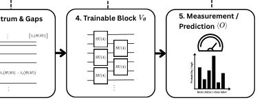
<figcaption class="paper-figure-caption"><b>Fig 1.</b> Figure 1: Synthesiser view of the quantum spectral model. Top, conceptual signal flow in a music synthesiser; bottom, the corresponding flow in a quantum spectral model. Reading the panels from left to right, the control signal corresponds to the input matrix, the oscillator bank to the input-derived Hamiltonian, the available tones to its spectrum and spectral gaps, the mixer and filter to the trainable quantum block, and the output sound to quantum measurement and prediction. A matrix input M defines a Hamiltonian H(M) whose spectrum supplies sample-conditioned candidate phase carriers and whose spectral projectors help determine their coefficients through the trainable mixer and quantum...</figcaption>
</figure>
<figure class="paper-figure-card">
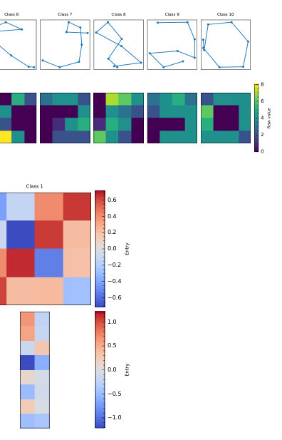
<figcaption class="paper-figure-caption"><b>Fig 2.</b> Figure 2: Representative training samples from the real-world and controlled synthetic bench- marks. (a) Pendigits. One example from each of the ten original classes is shown using two paired representations. The upper row shows the DYN representation, in which eight ordered two-dimensional pen coordinates are connected in their recorded sequence. The lower row shows the corresponding STA4 representation as a 4 × 4 bitmap-like matrix. Raw feature values are displayed for visualisation, whereas the model inputs are standardised using statistics computed from the training split; the colour bar reports the raw STA4 entry values. (b) Synthetic spectral benchmarks. One noisy training input from...</figcaption>
</figure>
<figure class="paper-figure-card">
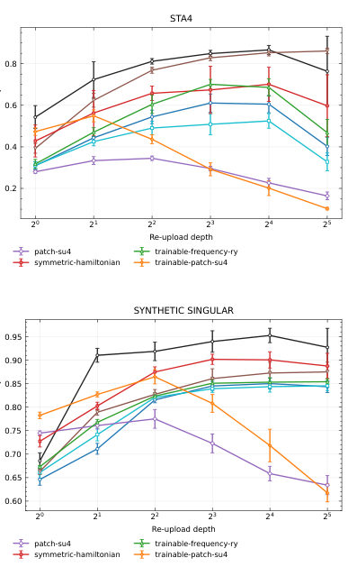
<figcaption class="paper-figure-caption"><b>Fig 3.</b> Figure 3: (a) Final test accuracy on the Pendigits benchmark as a function of reuploading depth. The two panels show the DYN 8×2 trajectory representation and the STA4 4×4 matrix representation. Each point is the mean over 20 parameter-initialisation seeds, and error bars show one standard deviation across seeds. QSMs lead the tested depth-32 comparisons. The global block-Hamiltonian QSM has the largest observed mean across the six depths on both representations, while the patch- local block-Hamiltonian QSM has the largest mean at depth 32. (b) Final test accuracy on the two synthetic spectral benchmarks as a function of reuploading depth. The SYNTHETIC EIGENGAP task uses noisy 4 × 4...</figcaption>
</figure>
<figure class="paper-figure-card">
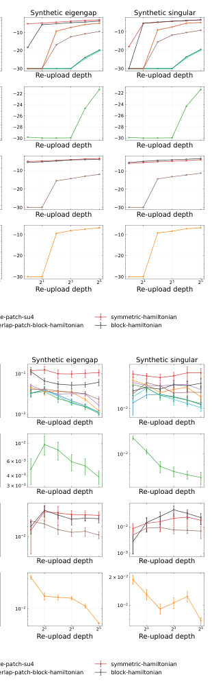
<figcaption class="paper-figure-caption"><b>Fig 4.</b> Figure 4: (a) Gradient variance at initialisation as a function of reuploading depth. For each run configuration, gradients are computed on a fixed diagnostic training batch of size 32 for 20 random initialisations. The plotted quantity is the median log10 variance across parameters within each parameter group, averaged over 20 run seeds; error bars show one standard deviation across run seeds. The coordinate-wise rotation-gate data-encoding unitaries exhibit strongly suppressed mixer-gradient variance at large depth, whereas the QSMs retain substantially larger initialisation variance. (b) Final-checkpoint RMS gradient as a function of reuploading depth. Gradients are computed at the final...</figcaption>
</figure>
<figure class="paper-figure-card">
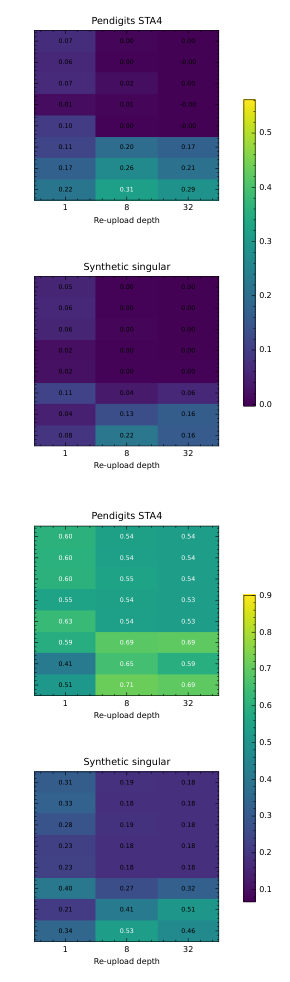
<figcaption class="paper-figure-caption"><b>Fig 5.</b> Figure 5: (a) Within-minus-between fidelity gap of the final quantum states. For each trained model, we compute the pure-state fidelity kernel Kij = | ⟨ψi|ψj⟩|2 on a fixed 32-example validation diagnostic batch and report the mean same-label off-diagonal fidelity minus the mean different-label off-diagonal fidelity. Larger values indicate stronger class separation in quantum-state geometry. At high depth, the global QSMs and the patch-local block-Hamiltonian QSM produce substantially larger gaps than the coordinate-wise rotation-gate and patch-SU(4) baselines. (b) Kernel-target alignment of the final quantum-state fidelity kernel. The plotted metric is the centred alignment between the...</figcaption>
</figure>
</div>

<p><strong>Summary.</strong> This paper proposes Quantum Spectral Models (QSMs) to improve data encoding in quantum machine learning by deriving the unitary generator directly from the input matrix's spectral properties. By analyzing how different structural components—like eigenvalues versus eigenvectors—contribute to performance on various tasks, the authors demonstrate that structure-aware design yields superior results over standard models.</p>
<p><strong>Why it may be interesting.</strong> While focused on ML, the explicit use of spectral decomposition and structural constraints derived from physical Hamiltonians ($H(M)$) provides a powerful framework for designing quantum circuits that respect underlying mathematical symmetries or physical conservation laws relevant in AMO physics.</p>
<details>
<summary>Detailed structure</summary>
<p><strong>Main problem.</strong> The core challenge is designing quantum machine learning models whose inductive bias explicitly incorporates the structure of matrix-valued input data, moving beyond simple coordinate-wise encodings.</p>
<p><strong>Main result.</strong> Quantum Spectral Models (QSMs) consistently outperform tested quantum and classical benchmarks across multiple datasets by leveraging input-conditioned spectral representations. The optimal structural reliance (spectral values vs. subspaces) is task-dependent.</p>
<p><strong>Method.</strong> The authors introduce QSMs that construct the data-encoding unitary generator directly from the input matrix, leading to an output with a truncated Fourier representation governed by input-derived spectral gaps and subspaces.</p>
<p><strong>Model / system.</strong> The model utilizes Quantum Spectral Models (QSMs) which encode data via Hamiltonians derived from the input matrix (e.g., symmetric or block structures). The architecture alternates between these Hamiltonian unitaries and trainable mixers.</p>
<p><strong>Key observables.</strong> Mean test accuracy across four benchmarks, target alignment (KTA), fidelity gap, and ablation performance metrics comparing spectrum-only vs. subspace-preserving controls.</p>
<p><strong>Important parameters / regimes.</strong> Circuit depth (tested up to 32) and the specific structure of the input Hamiltonian (symmetric, global block, patch-local).</p>
<p><strong>Assumptions / limitations.</strong> The primary assumption is that conditioning the unitary generator on spectral properties provides a superior, analysable inductive bias for quantum data encoding.</p>
<p><strong>Figures summary.</strong> Figures compare performance across depths and show diagnostic plots tracking target alignment (KTA) and effective rank evolution during training. Tables summarize quantitative comparisons against classical baselines and ablation studies.</p>
<p><strong>Paper structure.</strong> The paper introduces QSMs, details the Hamiltonian construction and Fourier representation, evaluates them on multiple datasets (Pendigits/Synthetic), analyzes performance diagnostics layer-by-layer, and concludes with an ablation study to dissect the necessity of spectral vs. subspace information.</p>
</details>
<details>
<summary>Abstract</summary>
<p>A central design principle in modern machine learning and artificial intelligence is to align a model's inductive bias with the structure of its input data. For matrix-valued inputs, relevant matrix-level relationships can be characterised through spectral values and spectral subspaces; however, common coordinate-wise rotation-gate data-encoding unitaries used in most quantum machine learning models do not explicitly construct such a matrix-level representation. We introduce Quantum Spectral Models (QSMs), in which we construct the generator of the data-encoding unitary directly from each input matrix. We study three QSM variants based on symmetric, global block, and non-overlapping patch-local block Hamiltonians. Their outputs admit truncated Fourier representations in which input-dependent spectral gaps supply candidate phase carriers, while spectral subspaces help determine their coefficients. We evaluate the QSMs and comparison quantum models on two matrix representations of Pendigits and two controlled synthetic tasks defined by spectral statistics. At the largest evaluated circuit depth, QSM variants lead the tested quantum models in mean test accuracy across all four benchmarks. The patch-local QSM leads on Pendigits, whereas the global block-Hamiltonian QSM leads on the controlled spectral tasks. Ablations show a task-dependent reversal: subspace-preserving controls perform better on Pendigits, whereas spectral-value-only controls lead among the tested ablations on the synthetic tasks. Together, these results shed new light on quantum machine-learning model design by showing how input-conditioned spectral representations can provide an analysable inductive bias, while offering a broader perspective on structure-aware model design in machine learning and artificial intelligence.</p>
</details>
<p><sub><a href="#top">↑ back to top</a></sub></p>

<p><a id="paper-2607.22429"></a></p>
<h3 id="a-route-to-damage-tolerance-exceeding-math434math-in-shuttling-equipped-quantum-processors"><a href="http://arxiv.org/abs/2607.22429v1">A route to damage tolerance exceeding $10\%$ in shuttling-equipped quantum processors</a></h3>
<p><strong>Authors:</strong> Quinten Eggerickx, Simon C. Benjamin<br>
<strong>Type:</strong> theory · <strong>Category:</strong> quantum information and computing · <strong>PDF:</strong> <a href="https://arxiv.org/pdf/2607.22429v1">https://arxiv.org/pdf/2607.22429v1</a><br>
<strong>Analysis basis:</strong> full PDF text, analyzed in chunks
<strong>Topic relevance:</strong> <code>QC/QI experiment</code> <strong>2/5</strong> · <code>methods for driven-dissipative</code> <strong>1/5</strong> · <code>quantum measurements</code> <strong>1/5</strong></p>
<div class="figure-strip-hint">↔ Scroll figures horizontally</div>
<div class="paper-figures-scroll">
<figure class="paper-figure-card">
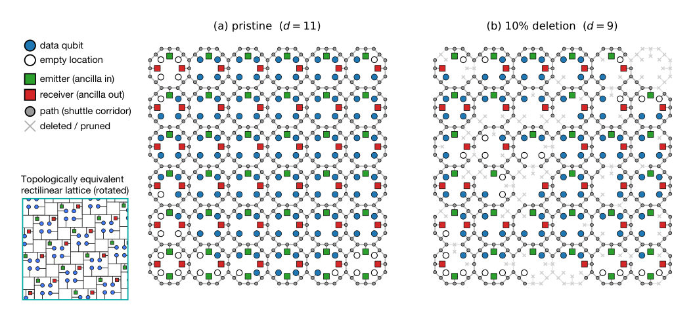
<figcaption class="paper-figure-caption"><b>Fig 1.</b> FIG. 1. The truncated-square (octagon) latticework, pristine (a) and after 10% node deletion (b). Filled blue circles are location nodes occupied by a data qubit; white circles are unoccupied locations. Green and red squares are emitter and receiver nodes, where ancillas are injected and read out; small grey circles are path nodes forming the shuttle corridors. Deleted nodes, and nodes pruned because deletion disconnected them from the main component, are shown as light crosses. The pristine 6 × 6 latticework hosts the full distance-11 code (121 data qubits); on the damaged instance shown, distance 9 is the largest code that fits (81 data qubits). The inset (lower left) redraws the pristine...</figcaption>
</figure>
<figure class="paper-figure-card">
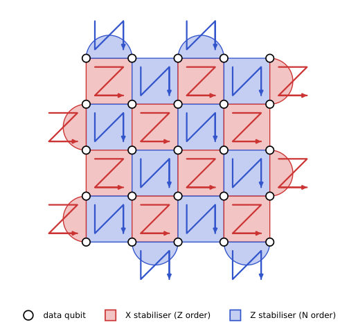
<figcaption class="paper-figure-caption"><b>Fig 2.</b> FIG. 2. The distance-d rotated surface code (shown for d = 5): d2 data qubits, with d2 −1 X (red) and Z (blue) stabilisers in a checkerboard, and weight-two boundary sta- bilisers as lobes. The hook-error-avoiding N–Z syndrome- extraction ordering [27, 28] is shown for each stabilizer: X- type ancillas visit their corner data qubits in the “Z”-shaped order NW→NE→SW→SE, Z-type ancillas in the “N”-shaped order NW→SW→NE→SE. The four steps form one global schedule; boundary stabilisers simply skip their missing cor- ners.</figcaption>
</figure>
<figure class="paper-figure-card">
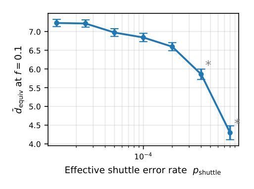
<figcaption class="paper-figure-caption"><b>Fig 3.</b> FIG. 3. Mean equivalent distance ¯dequiv at 10% deletion (6 × 6 grid, X basis) as a function of the dephasing shuttle error rate. Each point maps the damaged samples’ best LER onto an equivalent pristine distance via the same-noise pris- tine fit; error bars are the standard error of the mean (SEM). The curve is nearly flat below ∼2 × 10−4 and falls steeply above it, where the pristine log-linear fit also begins to break down (R2 dropping from 0.99 to 0.86) as the code approaches threshold. Asterisks mark the operating points where this equivalent-distance mapping is becoming unreliable — a de- graded pristine fit (R2 &lt; 0.95) and/or some samples whose LER falls beyond the pristine reference...</figcaption>
</figure>
<figure class="paper-figure-card">

<figcaption class="paper-figure-caption"><b>Fig 4.</b> FIG. 4. Idling sensitivity at 10% deletion (6 × 6 grid), with the shuttle rate fixed at 2 × 10−4. Top: mean equivalent dis- tance ¯dequiv vs the idling target pidle (error bars are the SEM). Bottom: the composition of the winning code size d∗across samples, with ¯d∗overlaid. The shaded band marks the tip- ping region (1 × 10−3–2 × 10−3) where the winning distance departs its low-noise d = 9 plateau and the equivalent dis- tance tips down. Asterisks (top panel) mark points where the equivalent-distance mapping is becoming unreliable — a de- graded pristine fit (R2 &lt; 0.95) and/or extrapolated samples — as the code nears threshold, exactly as in Fig. 3.</figcaption>
</figure>
<figure class="paper-figure-card">
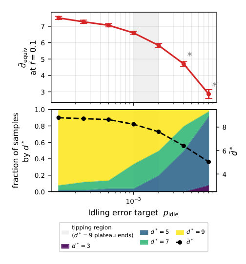
<figcaption class="paper-figure-caption"><b>Fig 5.</b> Fig. 4 fixes the shuttle rate at this primary value and sweeps the idling target. Below ∼10−3 the winning code size sits on a stable d = 9 plateau; between 10−3 and 2 × 10−3 the winning distance collapses off that plateau and the equivalent distance tips downward in lockstep. We adopt pidle = 10−3 as our baseline — the low edge of this tipping region, i.e. the largest idling error still short of the collapse. As established in the error model, this baseline is already about 20 times more pessimistic than the ∼5×10−5 implied by demonstrated silicon T2 times, so it is a conservative operating point in absolute terms as well.</figcaption>
</figure>
</div>

<p><strong>Summary.</strong> This work proposes an advanced method to maintain fault tolerance in shuttling quantum processors despite significant physical damage. By adapting pathfinding algorithms to route syndrome measurements around defective lattice sites, the authors show that 10% damage only reduces the effective code distance by a predictable factor. This demonstrates that mobility significantly enhances hardware robustness compared to fixed-qubit approaches.</p>
<p><strong>Why it may be interesting.</strong> It provides a concrete, quantitative framework for assessing hardware resilience in solid-state quantum computing platforms, directly addressing scalability limitations imposed by physical defects.</p>
<details>
<summary>Detailed structure</summary>
<p><strong>Main problem.</strong> The study addresses how fault-tolerant quantum computation can maintain functionality when subjected to physical damage (defects or 'drop outs') in the underlying hardware.</p>
<p><strong>Main result.</strong> The proposed shuttling-based method allows for substantial damage tolerance, achieving performance equivalent to a pristine lattice with only 48% to 60% of its distance even after 10% node deletion.</p>
<p><strong>Method.</strong> It adapts the CAbLECAR method by using route-solving software on time-expanded graphs to find efficient paths for ancillas performing syndrome measurements around damaged physical lattices.</p>
<p><strong>Model / system.</strong> The model is based on semiconductor electron spin-qubit systems configured in a latticework architecture supporting shuttling. It implements the surface code and simulates damage by deleting nodes from this lattice structure.</p>
<p><strong>Key observables.</strong> Logical error rate (LER), reduced equivalent surface-code distance ($d_{	ext{equiv}}$), and the maximum achievable code distance ($d$).</p>
<p><strong>Important parameters / regimes.</strong> Damage fraction ($f$), shuttle error rate ($p_{	ext{shuttle}}$), idling error rate, and the lattice size ($G 	imes G$ array).</p>
<p><strong>Assumptions / limitations.</strong> The damage is assumed to be static and known before runtime; the analysis focuses on the surface code in memory mode.</p>
<p><strong>Figures summary.</strong> Figures illustrate the latticework structure showing pristine vs. 10% deleted nodes, detailing location, path, and ancillary node placements.</p>
<p><strong>Paper structure.</strong> The paper introduces the problem of damage tolerance in shuttling qubits, details the adaptation of CAbLECAR using route-solving on damaged lattices, presents results quantifying performance degradation via $d_{	ext{equiv}}$, and concludes by generalizing the approach to other QLDPC codes.</p>
</details>
<details>
<summary>Abstract</summary>
<p>This is a short study of an approach offering high tolerance to damage (i.e. defects or 'drop outs') in solid state fault-tolerant quantum computing. Our method is primarily aimed at semiconductor electron spin-qubit systems, which have been shown to support fast and high-fidelity shuttling along pre-defined paths. We adapt the recent CAbLECAR method of Chadwick and Chong: stabilisers are performed by ancillas which each follow a bespoke pre-programmed path. We consider the simple surface code but we damage the physical lattice, and rely on route-solving software to find efficient pathways under constraints enforcing stabiliser commutation and hook error avoidance. Solutions are then converted to detector error models for Stim and logical error rates are obtained. We express our results by gauging the logical performance against that of a pristine lattice, using the notion of a reduced equivalent surface-code distance; for reasonable underlying error rates we find that $10\%$ damage leaves roughly half of the pristine equivalent distance ($d_\text{equiv}\approx0.48\,d_\text{pristine}$ in the large-array limit, rising to $\approx0.60$ for our smallest array). This suggests that one can tolerate substantial damage by building oversized arrays. We note that investigating damage tolerance of other qLDPC codes is a straightforward generalisation, and potentially one could adapt to damage emerging at runtime.</p>
</details>
<p><sub><a href="#top">↑ back to top</a></sub></p>

<p><a id="paper-2607.22195"></a></p>
<h3 id="maximal-fisher-budget-forces-blind-directions-in-bipartite-collective-sud-metrology"><a href="http://arxiv.org/abs/2607.22195v1">Maximal Fisher Budget Forces Blind Directions in Bipartite Collective SU(d) Metrology</a></h3>
<p><strong>Authors:</strong> Tariq Aziz, Naeem Akhtar, Dong Wang, Augusto Smerzi<br>
<strong>Type:</strong> theory · <strong>Category:</strong> quantum information and computing · <strong>PDF:</strong> <a href="https://arxiv.org/pdf/2607.22195v1">https://arxiv.org/pdf/2607.22195v1</a><br>
<strong>Analysis basis:</strong> full PDF text, analyzed in chunks
<strong>Topic relevance:</strong> <code>entanglement &amp; information structure</code> <strong>2/5</strong> · <code>correlated / nonlocal dissipation</code> <strong>1/5</strong> · <code>quantum measurements</code> <strong>1/5</strong></p>
<div class="figure-strip-hint">↔ Scroll figures horizontally</div>
<div class="paper-figures-scroll">
<figure class="paper-figure-card">
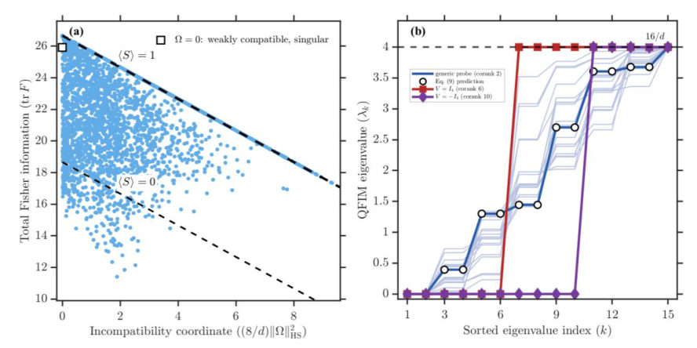
<figcaption class="paper-figure-caption"><b>Fig 1.</b> FIG. 1. (a) For 𝑑= 3, randomly generated pure probes obey the exact conservation law between</figcaption>
</figure>
<figure class="paper-figure-card">
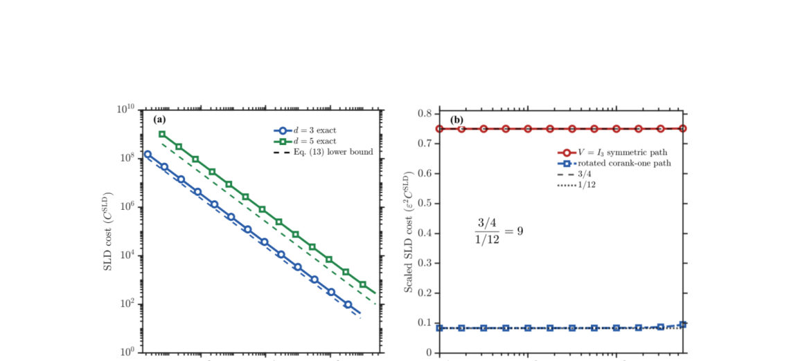
<figcaption class="paper-figure-caption"><b>Fig 2.</b> FIG. 2. (a) For exchange-symmetric probes, the SLD cost diverges inversely in the Schmidt-</figcaption>
</figure>
</div>

<p><strong>Summary.</strong> This theoretical paper rigorously analyzes the limits of quantum parameter estimation using bipartite probes under $SU(d)$ symmetry. It derives exact mathematical identities demonstrating that maximal Fisher sensitivity conflicts with full local identifiability, leading to inherent 'blind directions' in the measurement spectrum. The findings establish a hierarchy among distinct resources—sensitivity, compatibility, and identifiability—in non-commuting generator systems.</p>
<p><strong>Why it may be interesting.</strong> This work provides deep structural constraints on quantum estimation protocols, showing that achieving optimal precision requires sacrificing full parameter distinguishability in certain directions, which is a crucial concept for designing practical metrology schemes.</p>
<details>
<summary>Detailed structure</summary>
<p><strong>Main problem.</strong> The paper investigates the fundamental trade-offs between achieving maximal total Fisher sensitivity, ensuring full local identifiability, and satisfying weak compatibility constraints in quantum metrology.</p>
<p><strong>Main result.</strong> It establishes exact identities linking the Fisher information trace to measurable probe properties, showing that maximizing sensitivity forces blind directions unless generalized GHZ probes are used for $N \ge 3$.</p>
<p><strong>Method.</strong> The analysis involves deriving exact sum rules relating the Fisher matrix and incompatibility measures, utilizing structural decompositions of the underlying Lie algebra $\mathfrak{su}(d)$, and comparing bounds derived from different probe symmetries.</p>
<p><strong>Model / system.</strong> The system is a pure bipartite quantum probe state used to estimate an unknown collective $SU(d)$ transformation. The analysis focuses on the structure of the Quantum Fisher Information Matrix (QFIM) associated with this estimation process.</p>
<p><strong>Key observables.</strong> Quantum Fisher Information Matrix ($\mathcal{F}$), Total Fisher Budget ($    ext{tr} \mathcal{F}$), Exchange Symmetry Expectation ($\langle\mathcal{S}
angle$), and Weak Incompatibility Measure ($\Omega_{\mu
u}$).</p>
<p><strong>Important parameters / regimes.</strong> $d$ (the dimension of the $SU(d)$ group), the number of qubits/probes ($N$), and the structure of entanglement.</p>
<p><strong>Assumptions / limitations.</strong> The analysis assumes a single fixed collective setting for the probe measurement, and later compares results across different structural assumptions like exchange symmetry or weak compatibility ($\Omega=0$).</p>
<p><strong>Figures summary.</strong> Figure 1 visualizes the exact conservation law between $   ext{tr} \mathcal{F}$ and $\|\Omega\|_{	ext{HS}}^2$ for $d=3$, while Figure 2 compares QFIM spectra on the maximally entangled boundary for $d=4$.</p>
<p><strong>Paper structure.</strong> The paper progresses by first deriving exact identities relating Fisher sensitivity to two measurable properties (Chunk 1). It then analyzes the implications of weak compatibility and entanglement structure (Chunk 2). Finally, it tackles lower bounds on the inverse QFIM trace using advanced techniques involving $ au$-involutions and Fourier-frame constructions (Chunks 3 &amp; 4).</p>
</details>
<details>
<summary>Abstract</summary>
<p>For pure two-qudit probes used in a single fixed setting to estimate a common SU(d) transformation, maximal total Fisher sensitivity and full local identifiability are mutually exclusive. We derive exact identities that determine the trace of the quantum Fisher information matrix from two measurable probe properties: exchange symmetry and collective polarization. Every maximizer is exchange symmetric and maximally entangled. Its Fisher matrix has equal sensitivity in every visible direction, while $d(d-1)/2$ generator directions are blind. More generally, weak compatibility, defined by vanishing mean generator commutators, forces at least $\lfloor d/2\rfloor$ blind directions for every pure bipartite probe. A probe-defined antiunitary invariant classifies the complete Fisher spectrum at maximal entanglement, and approaches to the optimum that preserve exchange symmetry have a divergent Holevo cost. The bipartite obstruction is sharp in particle number: for $N\geq 3$, generalized GHZ probes can satisfy weak compatibility, attain the corresponding $N$-partite Fisher trace bound, and retain full local identifiability. Hence, Fisher sensitivity, weak compatibility, identifiability, and attainable precision are distinct resources in quantum metrology with noncommuting generators.</p>
</details>
<p><sub><a href="#top">↑ back to top</a></sub></p>

<p><a id="paper-2607.22047"></a></p>
<h3 id="multiplicity-of-stable-attractors-in-disordered-neural-models"><a href="http://arxiv.org/abs/2607.22047v1">Multiplicity of Stable Attractors in Disordered Neural Models</a></h3>
<p><strong>Authors:</strong> Raffaele Marino, Roberto Livi, Antonio Politi<br>
<strong>Type:</strong> theory · <strong>Category:</strong> disordered systems and neural networks · <strong>PDF:</strong> <a href="https://arxiv.org/pdf/2607.22047v1">https://arxiv.org/pdf/2607.22047v1</a><br>
<strong>Analysis basis:</strong> full PDF text, analyzed in chunks
<strong>Topic relevance:</strong> <code>Keldysh / 2PI / non-Gaussian methods</code> <strong>1/5</strong> · <code>analog quantum simulation</code> <strong>1/5</strong> · <code>driven-dissipative phase transition</code> <strong>1/5</strong> · <code>methods for driven-dissipative</code> <strong>1/5</strong> · <code>non-equilibrium dynamics</code> <strong>1/5</strong> · <code>non-equilibrium universality</code> <strong>1/5</strong></p>
<div class="figure-strip-hint">↔ Scroll figures horizontally</div>
<div class="paper-figures-scroll">
<figure class="paper-figure-card">
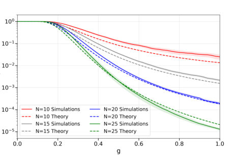
<figcaption class="paper-figure-caption"><b>Fig 1.</b> Figure 1. Fraction of PN(g) of SFPs as a function of g for several sizes. Solid curves are simulation estimates averaged over different matrices (10 for N ≤20, 2 for N = 25); shaded bands indicate the uncertainty on the mean (error bar on the average). Dashed curves are the perturbative predictions obtained by integrating the minima density.</figcaption>
</figure>
<figure class="paper-figure-card">
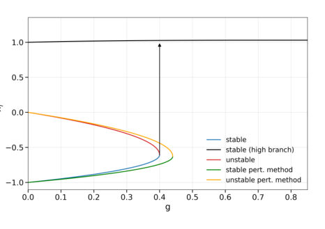
<figcaption class="paper-figure-caption"><b>Fig 2.</b> Figure 2. For small g, the stable fixed point (blue, lower branch) is a descendant of the g = 0 sign pattern with x∗(k) i ≈−1, and the component drifts continuously as g in- creases. The unstable equilibrium branch (red) approaches the stable one and annihilates with it near g ≃0.4. In green (orange) is presented the stable (unstable) path computed using our perturbative method.</figcaption>
</figure>
<figure class="paper-figure-card">
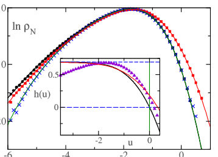
<figcaption class="paper-figure-caption"><b>Fig 3.</b> Figure 3. Main panel: the symbols denote numerical esti- mates of ρN(u) for N = 20. Data have been obtained by averaging over 1000 realizations of the matrix A. Full cir- cles, crosses, and squares correspond to the Ginibre ensem- ble, a uniform distribution of entries, and to the symmetric case, respectively. The solid curves identify the correspond- ing theoretical predictions. Inset: the triangles correspond to h(u) estimated as ln ρN/N +ln 2 for the Ginibre ensemble. The black and red solid curves correspond to the theoretical predictions for asymmetric and symmetric matrices, respec- tively.</figcaption>
</figure>
<figure class="paper-figure-card">

<figcaption class="paper-figure-caption"><b>Fig 4.</b> Figure 4. Comparison between the perturbative theoretical prediction h(g) = ln 2 + ln[1 −Φ(uc(g))] (black solid line) and the rate extracted from direct numerical simulations in the large-N limit (red squares with error bars).</figcaption>
</figure>
<figure class="paper-figure-card">

<figcaption class="paper-figure-caption"><b>Fig 5.</b> Figure 5. Number of stable fixed points (SFP) as a func- tion of the system size N, shown on a linear–log scale. Blue markers denote the mean SFP averaged over disorder real- izations, with error bars. The red line is a least-squares fit that confirms an exponential growth SFP ∼e0.159N.</figcaption>
</figure>
</div>

<p><strong>Summary.</strong> This work analyzes how the number of stable fixed points in disordered neural networks changes as coupling strength increases. Using large-deviation statistics and perturbation theory, the authors predict that SFPs disappear through bifurcations at a critical coupling $g_c$. The findings establish a quantitative link between disorder structure and dynamical stability in these complex systems.</p>
<p><strong>Why it may be interesting.</strong> While focused on classical dynamics, the analysis of stability boundaries, bifurcations, and the role of disorder in determining system attractors shares conceptual links with understanding phase transitions or localization phenomena in quantum many-body systems.</p>
<details>
<summary>Detailed structure</summary>
<p><strong>Main problem.</strong> The study aims to determine the multiplicity of stable fixed-points (SFPs) in disordered neural ordinary differential equation models.</p>
<p><strong>Main result.</strong> For small coupling strengths, there are no qualitative differences between symmetric and asymmetric dynamics; SFP depletion occurs via saddle-node bifurcations at a critical coupling strength $g_c$.</p>
<p><strong>Method.</strong> The authors employ large-deviation statistics combined with a perturbative method in the disorder amplitude to estimate the number of stable attractors.</p>
<p><strong>Model / system.</strong> The model consists of N neurons governed by nODEs, featuring local double-well potentials and interactions mediated by a random coupling matrix $A$.</p>
<p><strong>Key observables.</strong> Average fraction of SFPs ($P_N(g)$), the minimum value $u$ derived from correlated Gaussian variables, and the multiplicity index $h(g)$.</p>
<p><strong>Important parameters / regimes.</strong> Coupling strength ($g$), disorder amplitude, and system size ($N$).</p>
<p><strong>Assumptions / limitations.</strong> The perturbative method is reliable for small $g$, and asymptotic analysis relies on large-deviation theory approximations.</p>
<p><strong>Figures summary.</strong> Figures show the sharp drop in SFP fraction vs. coupling strength (Fig. 1), comparisons between perturbative estimates and exact solutions near bifurcations (Fig. 2), and density estimations $
ho_N(u)$ for different matrix ensembles (Fig. 3).</p>
<p><strong>Paper structure.</strong> The paper develops the theoretical framework using large-deviation theory to calculate SFP multiplicity, applies this to specific disordered neural models (asymmetric vs. symmetric coupling), derives analytical forms for the distribution of minima $u$, and compares these predictions against numerical simulations across different coupling regimes.</p>
</details>
<details>
<summary>Abstract</summary>
<p>We show how large-deviation statistics allows one to obtain reliable estimates of the multiplicity of stable fixed-points in a model of neural ordinary differential equations previously employed in computational tasks. The result is obtained by developing a suitable perturbative method in the amplitude of the disorder. It turns out that for not-too-large coupling strengths there are no qualitative differences between the symmetric case, when the dynamics is a purely gradient evolution, and the asymmetric case, when limit cycles and chaos can, in principle, arise. The selection of this specific model is dictated by pedagogical reasons, but we are confident that the approach can be extended to other many-degree-of-freedom dynamical models characterized by different classes of random coupling matrices.</p>
</details>
<p><sub><a href="#top">↑ back to top</a></sub></p>

<p><a id="paper-2607.22417"></a></p>
<h3 id="hyperspatial-sampling-circumventing-free-energy-barriers-via-replica-exchange-with-extra-dimensions"><a href="http://arxiv.org/abs/2607.22417v1">Hyperspatial Sampling: Circumventing Free-Energy Barriers via Replica Exchange with Extra Dimensions</a></h3>
<p><strong>Authors:</strong> Henrik Christiansen, Matheus Ferraz, Takashi Maruyama, Francesco Alesiani<br>
<strong>Type:</strong> theory · <strong>Category:</strong> statistical mechanics · <strong>PDF:</strong> <a href="https://arxiv.org/pdf/2607.22417v1">https://arxiv.org/pdf/2607.22417v1</a><br>
<strong>Analysis basis:</strong> full PDF text, analyzed in chunks
<strong>Topic relevance:</strong> <code>analog quantum simulation</code> <strong>1/5</strong> · <code>driven-dissipative phase transition</code> <strong>1/5</strong> · <code>methods for driven-dissipative</code> <strong>1/5</strong> · <code>non-equilibrium dynamics</code> <strong>1/5</strong></p>
<div class="figure-strip-hint">↔ Scroll figures horizontally</div>
<div class="paper-figures-scroll">
<figure class="paper-figure-card">

<figcaption class="paper-figure-caption"><b>Fig 1.</b> FIG. 1. (a) Target one-dimensional potential H(x) (black curve) with the marginal x-histogram and trajectory samples (pink) from the separable HS-REX replica, showing equal occupancy of both minima. (b)–(f) Contours of the two-dimensional hyperspatial potential H(x) and trajectory samples for µ = 100 (separable), 100, 10, 1, and 0.1. As µ decreases, the penalty on the extra coordinate x+ weakens, the accessible region in the extended space expands, and samples at small µ circumnavigate the x-barrier via nonzero x+. Exchange acceptance is ∼100% between the separable replica and µ = 100, and 36–45% between neighboring non-separable pairs. The d = 2 dimensional Hamiltonian is shown in (g).</figcaption>
</figure>
<figure class="paper-figure-card">

<figcaption class="paper-figure-caption"><b>Fig 2.</b> FIG. 2. Backbone free-energy surfaces ∆F for HS-REX and PT at the physical and enhanced replicas. (a)–(c) show the ability of the methods enhanced replicas to explore the configuration space, (d)–(f) present the sampling under target physical conditions. (a) and (d) are results from HS-REX at (a) µ = 0.5 and (d) the separable system with µ = 2000, respectively. Panels (b) and (e) show the same data, but remapped to L-chiral configurations by transforming D-form frames as (ϕ, ψ) 7→(−ϕ, −ψ). Reference PT simulations are show in (c) for T = 600 K and (f) the target temperature T = 298 K. The data shown uses an identical number of simulation steps. The initial equilibration frames are discarded.</figcaption>
</figure>
<figure class="paper-figure-card">

<figcaption class="paper-figure-caption"><b>Fig 3.</b> FIG. 3. Signed Cα chirality volume for alanine dipeptide (common trajectory length; first 100 frames discarded). (a) HS-REX physical replica (µ = 2000); gray: PT T = 298 K reference. (b) HS-REX enhanced replica (µ = 0.5) with the same reference.</figcaption>
</figure>
<figure class="paper-figure-card">

<figcaption class="paper-figure-caption"><b>Fig 4.</b> FIG. 4. Replica-exchange diagnostics for alanine dipeptide (common trajectory length). (a) Per-pair acceptance rates for HS-REX (µ = 2000–0.5, blue) and PT (T = 298–600 K, red); dashed line: optimal 23% [22]. (b) Round-trip time distributions (dashed lines: means).</figcaption>
</figure>
</div>

<p><strong>Summary.</strong> This paper introduces Hyperspatial Replica Exchange (HS-REX), an advanced enhanced sampling technique that artificially increases the dimensionality of a physical system. By utilizing extra dimensions, HS-REX allows simulations to bypass high free-energy barriers inaccessible in the original space. This method is shown to efficiently sample complex conformational changes in biomolecules like alanine dipeptide, outperforming conventional temperature replica exchange.</p>
<p><strong>Why it may be interesting.</strong> While focused on classical statistical mechanics, the concept of mapping complex dynamics onto higher-dimensional spaces to achieve better sampling parallels theoretical approaches used in quantum simulation and optimization problems where high barriers limit exploration.</p>
<details>
<summary>Detailed structure</summary>
<p><strong>Main problem.</strong> The central challenge is simulating physical systems trapped in rugged free-energy landscapes due to high energy barriers between metastable states.</p>
<p><strong>Main result.</strong> Hyperspatial Replica Exchange (HS-REX) successfully circumvents these barriers by artificially extending the system into higher dimensions, achieving enhanced ergodic sampling compared to standard methods.</p>
<p><strong>Method.</strong> The method extends the physical Hamiltonian into extra spatial dimensions and uses a replica exchange framework where exchanges occur based on varying harmonic penalties in these added dimensions.</p>
<p><strong>Model / system.</strong> Benchmark systems include a double-well model and alanine dipeptide simulated in explicit water. The formalism involves extending the Hamiltonian to $D = d + d_+$ dimensions with a quadratic penalty term applied selectively to solute atoms.</p>
<p><strong>Key observables.</strong> Enhanced conformational sampling, successful crossing of energy barriers (e.g., L/D chirality inversion), and significantly reduced round-trip simulation times compared to Parallel Tempering (PT).</p>
<p><strong>Important parameters / regimes.</strong> The harmonic penalty strength ($\mu$) is varied across replicas; the method's efficiency depends on maintaining appropriate acceptance rates.</p>
<p><strong>Assumptions / limitations.</strong> The technique assumes that the added dimensions define a fast subsystem suitable for exact propagation methods, and the penalty is applied only to solute atoms to maintain physical relevance in solvated systems.</p>
<p><strong>Figures summary.</strong> Figures compare free-energy surfaces ($\Delta F$) showing enhanced exploration via HS-REX versus trapping in PT. Other figures compare acceptance rates and round-trip time distributions, demonstrating superior mixing for HS-REX.</p>
<p><strong>Paper structure.</strong> The paper introduces the concept of hyperspatial extension to overcome barriers, validates it on a simple double-well model, and then applies it rigorously to biomolecular systems like alanine dipeptide in water, comparing performance metrics (acceptance rates, time scales) against established methods like PT.</p>
</details>
<details>
<summary>Abstract</summary>
<p>Simulating systems with rugged free-energy landscapes remains a central challenge in computational physics and chemistry. We introduce hyperspatial replica exchange (HS-REX), an enhanced sampling method in which the physical system is artificially extended by additional spatial dimensions. In higher dimensions, free-energy barriers can be circumvented through paths that are geometrically inaccessible in the original space. Restricting the penalty to only solute atoms dramatically reduces the number of replicas required for solvated systems compared to standard temperature replica exchange, a feature especially relevant for biological applications. As proof of concept, we demonstrate the method on a double-well model system and on alanine dipeptide in explicit water as benchmark system. In the latter case, HS-REX achieves enhanced conformational sampling of not only the slow backbone dihedral angles, but also both chiral configurations of the molecule, which are sterically inaccessible to standard sampling in three dimensions. This demonstrates enhanced ergodic sampling over conventional temperature replica exchange.</p>
</details>
<p><sub><a href="#top">↑ back to top</a></sub></p>

<p><a id="paper-2607.21697"></a></p>
<h3 id="non-clifford-quantum-cellular-automata-from-invertible-topological-quantum-field-theories"><a href="http://arxiv.org/abs/2607.21697v1">Non-Clifford quantum cellular automata from invertible topological quantum field theories</a></h3>
<p><strong>Authors:</strong> Meng Sun, Zongyuan Wang, Bowen Yang, Nathanan Tantivasadakarn, Yu-An Chen<br>
<strong>Type:</strong> theory · <strong>Category:</strong> other · <strong>PDF:</strong> <a href="https://arxiv.org/pdf/2607.21697v1">https://arxiv.org/pdf/2607.21697v1</a><br>
<strong>Analysis basis:</strong> full PDF text, analyzed in chunks
<strong>Topic relevance:</strong> <code>analog quantum simulation</code> <strong>1/5</strong> · <code>driven-dissipative phase transition</code> <strong>1/5</strong> · <code>methods for driven-dissipative</code> <strong>1/5</strong> · <code>non-equilibrium dynamics</code> <strong>1/5</strong></p>
<div class="figure-strip-hint">↔ Scroll figures horizontally</div>
<div class="paper-figures-scroll">
<figure class="paper-figure-card">

<figcaption class="paper-figure-caption"><b>Fig 1.</b> Figure 1: Workflow for constructing the QCAs in this work. A commuting Hamiltonian is first obtained through condensation or higher-form gauging. Cup-product identities reorganize its generators into one candidate separator per microscopic degree of freedom. Compatible local flippers then complete the separator algebra, whose identification with the on-site clock and shift algebra defines the QCA.</figcaption>
</figure>
</div>

<p><strong>Summary.</strong> This paper introduces a unified algebraic construction to derive Quantum Cellular Automata (QCAs) directly from invertible Topological Quantum Field Theories (TQFTs). By extending the Hamiltonian generators into a complete separator-flipper algebra, the authors provide a systematic route to construct and classify QCAs in higher dimensions. This advances our understanding of how topological invariants dictate microscopic quantum dynamics.</p>
<p><strong>Why it may be interesting.</strong> This work is highly relevant as it provides a systematic, algebraic bridge between abstract topological field theories (a mathematical/theoretical framework) and concrete, physically realizable quantum dynamics models like QCAs, which are crucial for understanding non-equilibrium many-body physics.</p>
<details>
<summary>Detailed structure</summary>
<p><strong>Main problem.</strong> The core problem is developing a unified algebraic construction to derive Quantum Cellular Automata (QCAs) directly from invertible Topological Quantum Field Theories (TQFTs). This addresses the challenge that a TQFT action alone does not specify the full local operator algebra automorphism required for a QCA.</p>
<p><strong>Main result.</strong> The authors provide a general, systematic algebraic framework to convert invertible TQFTs into microscopic QCAs in various dimensions. They also proved that certain higher-dimensional QCAs are stably trivial by constructing finite-depth quantum circuits for them.</p>
<p><strong>Method.</strong> The method involves extending the commuting generators of the Hamiltonian to a complete separator-flipper algebra on the full Hilbert space, utilizing techniques from cochain theory and cup products to define the necessary local automorphisms.</p>
<p><strong>Model / system.</strong> The study focuses on Quantum Cellular Automata (QCAs), which model locality-preserving quantum dynamics. The input physics is an invertible TQFT response action, leading to constructions in dimensions $d=4k-1$ and general higher dimensions.</p>
<p><strong>Key observables.</strong> The resulting QCA must be an automorphism of the full local operator algebra; key diagnostics include identifying generalized U(1) QCAs associated with products of Wu classes.</p>
<p><strong>Important parameters / regimes.</strong> Spatial dimension ($d$), specific topological invariants (e.g., those derived from Witt groups or Wu classes), and algebraic structures like separator-flipper algebras.</p>
<p><strong>Assumptions / limitations.</strong> The primary assumption is that the QCA structure can be fully captured by extending the Hamiltonian generators into a complete, commuting algebra of local operators.</p>
<p><strong>Figures summary.</strong> Figure 1 illustrates the workflow: starting from a TQFT response action to obtain a Hamiltonian, then constructing candidate separators via cup-products, and finally defining the full QCA automorphism using flippers.</p>
<p><strong>Paper structure.</strong> The paper builds by first establishing the algebraic necessity of moving beyond just the ground state Hamiltonian. It then details the unified construction for 3D systems, generalizes this to higher dimensions ($d=4k-1$), provides explicit constructions for arbitrary Wu class products, and concludes with proofs of triviality for specific cases.</p>
</details>
<details>
<summary>Abstract</summary>
<p>Quantum cellular automata (QCAs) describe locality-preserving quantum dynamics and connect quantum information, many-body physics, and topological quantum field theory (TQFT). Constructing a QCA from a TQFT, however, is challenging. Although a topological action can produce a commuting Hamiltonian realizing the desired ground state, it does not by itself specify an automorphism of the full local operator algebra. In this work, we develop a unified algebraic construction that extends the commuting generators of the Hamiltonian to a complete separator-flipper algebra on the full tensor-product Hilbert space, providing a microscopic definition of the corresponding QCA. In three spatial dimensions, our formalism unifies all previously known QCA constructions associated with the $\mathbb Z_8\times\mathbb Z_2$ subgroup of the Witt group, including the $U(1)_2$ and $U(1)_4$ QCAs. The same algebraic structure directly yields new infinite families of generalized $U(1)_2$ and $U(1)_4$ non-Clifford QCAs in dimensions $d=4k-1$. We also reformulate the 4-dimensional $w_2w_3$ QCA and use it to develop a general construction of QCAs from TQFTs associated with arbitrary products of Wu classes. This construction includes two infinite families. The first consists of $w_2^nw_3^m$ QCAs in dimension $d=2n+3m-1$, while the second consists of $w_2w_{4k-1}$ QCAs in dimension $d=4k$. As a contrasting result, we explicitly construct finite-depth quantum circuits for the 5-dimensional $w_3^2$ and $w_2^3$ QCAs, thereby proving that they are trivial, in agreement with the cobordism classification. Overall, these results convert invertible TQFTs into microscopic QCAs, provide a scalable route to higher-dimensional constructions beyond the Clifford setting, and open a systematic approach to classifying their stable structures and boundary anomalies.</p>
</details>
<p><sub><a href="#top">↑ back to top</a></sub></p>

<p><a id="paper-2607.22052"></a></p>
<h3 id="norm-of-resonance-states-in-quantum-scattering-and-electromagnetic-systems"><a href="http://arxiv.org/abs/2607.22052v1">Norm of resonance states in quantum scattering and electromagnetic systems</a></h3>
<p><strong>Authors:</strong> Florian Lorenz, Jan Möseritz-Schmidt, Roland Ketzmerick<br>
<strong>Type:</strong> theory · <strong>Category:</strong> other · <strong>PDF:</strong> <a href="https://arxiv.org/pdf/2607.22052v1">https://arxiv.org/pdf/2607.22052v1</a><br>
<strong>Analysis basis:</strong> full PDF text, analyzed in chunks
<strong>Topic relevance:</strong> <code>Keldysh / 2PI / non-Gaussian methods</code> <strong>1/5</strong> · <code>correlated / nonlocal dissipation</code> <strong>1/5</strong> · <code>driven-dissipative phase transition</code> <strong>1/5</strong> · <code>methods for driven-dissipative</code> <strong>1/5</strong></p>
<div class="figure-strip-hint">↔ Scroll figures horizontally</div>
<div class="paper-figures-scroll">
<figure class="paper-figure-card">

<figcaption class="paper-figure-caption"><b>Fig 1.</b> FIG. 1. Resonance state of a scattering system with piecewise homogeneous properties showing its real part in position space (left) and on the boundary (right). While its norm is defined by an integral over infinite space, we show in various physical settings that it can be computed using a convenient boundary integral only.</figcaption>
</figure>
</div>

<p><strong>Summary.</strong> This paper addresses the technical difficulty of normalizing resonance states whose wavefunctions diverge at infinity by replacing divergent volume integrals with boundary surface integrals using the divergence theorem. It provides general, rigorous formulas applicable to both quantum particle scattering problems and electromagnetic cavity analysis, making it a key theoretical resource for open quantum systems.</p>
<p><strong>Why it may be interesting.</strong> This work provides essential, rigorous mathematical tools for calculating quantities like coupling strengths or state normalization in open quantum systems where standard $L^2$ methods fail due to continuum coupling. This is vital for modeling resonance phenomena in quantum optics and scattering theory.</p>
<details>
<summary>Detailed structure</summary>
<p><strong>Main problem.</strong> The primary challenge is defining and calculating the 'norm' of resonance states in quantum scattering and electromagnetic systems because the standard $L^2$-norm integral diverges at infinity.</p>
<p><strong>Main result.</strong> The paper successfully derives methods to replace the divergent volume integral with a mathematically tractable boundary integral using the divergence theorem, yielding explicit formulas for the norm.</p>
<p><strong>Method.</strong> The core method involves applying the divergence theorem (Green's identities) to rewrite volume integrals of products of resonance states into surface integrals over the system boundaries. Zel'dovich regularization is used to handle the asymptotic divergences.</p>
<p><strong>Model / system.</strong> The work covers two main areas: quantum particles in $D$-dimensional spaces with hard-wall or piecewise constant potentials, and electromagnetic fields within cavities possessing piecewise homogeneous material properties (2D/3D).</p>
<p><strong>Key observables.</strong> The resonance state norm ($\langle\psi_L|\psi_R
angle$ or $N_{TM}, N_{TE}$), which quantifies the normalization of these quasi-bound states.</p>
<p><strong>Important parameters / regimes.</strong> Complex eigenfrequencies ($\lambda$), boundary geometry (e.g., spherical scatterers, circular disks), and material properties defining piecewise homogeneity.</p>
<p><strong>Assumptions / limitations.</strong> The derivation relies heavily on expressing the integrand as a divergence of a suitable vector field and employing regularization techniques to manage infinite integrals.</p>
<p><strong>Figures summary.</strong> Figure 1 illustrates that the norm, defined over infinite space, can be computed entirely via an integral restricted to the finite boundary surface ($\partial\Gamma$).</p>
<p><strong>Paper structure.</strong> The paper develops general mathematical frameworks by first establishing the need for regularization and then systematically applying the divergence theorem. It applies these derived boundary integral formulas separately to quantum scattering problems (hard-wall potentials) and electromagnetic cavity problems.</p>
</details>
<details>
<summary>Abstract</summary>
<p>Resonance states spatially diverge and are thus not square integrable. Instead, their norm is defined by the biorthogonal scalar product of left and right states. We replace the corresponding volume integral by a convenient boundary integral in piecewise homogeneous systems and apply this procedure to diverse physical settings. For a quantum particle in any number of dimensions we treat hard-wall and piecewise constant potentials. For electromagnetic systems with piecewise homogeneous material properties, we consider three-dimensional and effectively two-dimensional cavities of arbitrary shape. As examples, we treat the spherical scatterer and the circular disk.</p>
</details>
<p><sub><a href="#top">↑ back to top</a></sub></p>

<p><a id="paper-2607.22487"></a></p>
<h3 id="quasiparticle-interference-as-a-tool-to-study-quantum-materials"><a href="http://arxiv.org/abs/2607.22487v1">Quasiparticle interference as a tool to study quantum materials</a></h3>
<p><strong>Authors:</strong> Luke C. Rhodes, Yuhki Kohsaka, Tetsuo Hanaguri, Carolina de Almeida Marques, Peter Wahl<br>
<strong>Type:</strong> both · <strong>Category:</strong> strongly correlated electrons · <strong>PDF:</strong> <a href="https://arxiv.org/pdf/2607.22487v1">https://arxiv.org/pdf/2607.22487v1</a><br>
<strong>Analysis basis:</strong> full PDF text, analyzed in chunks
<strong>Topic relevance:</strong> <code>Keldysh / 2PI / non-Gaussian methods</code> <strong>1/5</strong> · <code>Kondo &amp; dissipative impurity</code> <strong>1/5</strong> · <code>analog quantum simulation</code> <strong>1/5</strong> · <code>non-equilibrium dynamics</code> <strong>1/5</strong></p>
<div class="figure-strip-hint">↔ Scroll figures horizontally</div>
<div class="paper-figures-scroll">
<figure class="paper-figure-card">

<figcaption class="paper-figure-caption"><b>Fig 1.</b> FIG. 1. First experiments on QPI in noble metal (111) surface states. (a) Topographic</figcaption>
</figure>
<figure class="paper-figure-card">

<figcaption class="paper-figure-caption"><b>Fig 2.</b> FIG. 2. Illustration of the working principle of STM. (a) Sketch of the measurement geometry</figcaption>
</figure>
<figure class="paper-figure-card">

<figcaption class="paper-figure-caption"><b>Fig 3.</b> FIG. 3. Measurement of Quasi-particle interference. (a) Topographic STM image z(x, y),</figcaption>
</figure>
<figure class="paper-figure-card">

<figcaption class="paper-figure-caption"><b>Fig 4.</b> FIG. 4. Signal from noise. (a) synthetic conductance map g(r, V ) consisting of random noise.</figcaption>
</figure>
<figure class="paper-figure-card">

<figcaption class="paper-figure-caption"><b>Fig 5.</b> FIG. 5. Linear transformation and Lawler-Fujita algorithm. (a) Constant-current topography,</figcaption>
</figure>
</div>

<p><strong>Summary.</strong> This review details Quasiparticle Interference (QPI) as a vital experimental technique for probing the low-energy electronic structure of quantum materials. By analyzing standing wave patterns observed via STM, researchers can map out momentum-space information related to electron scattering. This methodology has proven invaluable across diverse fields, from topological insulators to unconventional superconductors.</p>
<p><strong>Why it may be interesting.</strong> While focused on condensed matter, the underlying physics involves many-body dynamics and electronic correlations in strongly interacting systems, which shares conceptual overlap with open quantum system descriptions of quasiparticle interactions.</p>
<details>
<summary>Detailed structure</summary>
<p><strong>Main problem.</strong> Understanding the properties of quantum materials requires detailed knowledge of their low energy electronic structure to enable control and design.</p>
<p><strong>Main result.</strong> Quasiparticle interference (QPI) imaging using STM provides a powerful, real-space tool to map out the underlying electronic structure, revealing details about correlations and symmetries in various novel materials.</p>
<p><strong>Method.</strong> The study reviews QPI principles, which are experimentally detected via Scanning Tunneling Microscopy (STM) by analyzing standing wave modulations in the Local Density of States (LDOS). Theoretical modeling is crucial for interpreting these complex scattering patterns.</p>
<p><strong>Model / system.</strong> The focus is on various quantum materials, including topological insulators, Weyl semimetals, graphene, and unconventional superconductors. The analysis relies on STM measurements of tunneling current/conductance ($g(r, V)$) which are sensitive to the electronic structure via quasiparticle scattering.</p>
<p><strong>Key observables.</strong> Standing wave patterns in LDOS modulations; Fourier Transform ($   ilde{g}(q_x, q_y, V)$) revealing momentum-space information (dispersion relations); superconducting gap structures and Fermi arc signatures.</p>
<p><strong>Important parameters / regimes.</strong> Low energy electronic structure details; temperature regimes down to 50mK; magnetic fields; scattering vectors ($q$).</p>
<p><strong>Assumptions / limitations.</strong> The interpretation of QPI data requires advanced theoretical modeling, and experimental measurements must account for artifacts like the setpoint effect or raster scanning distortions.</p>
<p><strong>Figures summary.</strong> Figures illustrate initial QPI experiments on noble metal surfaces showing standing wave patterns and extracted dispersion relations, alongside diagrams detailing the STM working principle and tunneling current measurement geometry.</p>
<p><strong>Paper structure.</strong> The review progresses by first establishing the necessity of electronic structure knowledge. It then details the experimental capabilities of STM/QPI, covering theory (elastic vs. inelastic tunneling), data acquisition ($g(r, V)$), and analysis (Fourier Transform). Finally, it reviews successful applications across diverse quantum materials.</p>
</details>
<details>
<summary>Abstract</summary>
<p>To understand the properties of quantum materials a detailed knowledge of the material's low energy electronic structure is key. Details of the electronic structure drive the ground state through electronic instabilities, electronic correlation effects, new electronic orders or just the absence of electronic states near the Fermi energy - making a realistic and detailed understanding crucial to be able to control and design properties of quantum materials. The past 25 years have seen a significant improvement in experimental techniques to observe the true electronic structure, in particular in techniques such as Angle resolved photoemission spectroscopy (ARPES) where energy resolutions of 2meV are routinely achievable now, which however is limited to zero magnetic field and only provides information about the occupied states. Scanning tunneling microscopy (STM) achieves a significantly better energy resolution &lt;100$μ$eV and can operate at temperatures well below 50mK and in magnetic fields. While per se a real-space technique, by imaging quasiparticle interference (QPI) STM can also provide information about the electronic structure. This technique has been used over the past decades to study a wide range of quantum materials to understand correlated electron behaviour. Recent theoretical progress now enables routine modelling of QPI, a key requirement to interpret the complex data. Here, we review the principles of QPI, its origin, experimental detection, and the physical insight gained from the study of QPI and possible future directions for this technique.</p>
</details>
<p><sub><a href="#top">↑ back to top</a></sub></p>

<p><a id="paper-2607.22373"></a></p>
<h3 id="metrology-of-quantum-imaging-schemes"><a href="http://arxiv.org/abs/2607.22373v1">Metrology of quantum imaging schemes</a></h3>
<p><strong>Authors:</strong> Emma Brambila, Giacomo Sorelli<br>
<strong>Type:</strong> theory · <strong>Category:</strong> other · <strong>PDF:</strong> <a href="https://arxiv.org/pdf/2607.22373v1">https://arxiv.org/pdf/2607.22373v1</a><br>
<strong>Analysis basis:</strong> full PDF text, analyzed in chunks
<strong>Topic relevance:</strong> <code>entanglement &amp; information structure</code> <strong>1/5</strong> · <code>interference shaping light</code> <strong>1/5</strong> · <code>quantum measurements</code> <strong>1/5</strong></p>
<div class="figure-strip-hint">↔ Scroll figures horizontally</div>
<div class="paper-figures-scroll">
<figure class="paper-figure-card">

<figcaption class="paper-figure-caption"><b>Fig 1.</b> FIG. 1. Effect of the point-spread function (PSF) widths σPSF, corresponding to different singular-mode decomposi- tions, from a fixed object of size ℓobj.</figcaption>
</figure>
<figure class="paper-figure-card">

<figcaption class="paper-figure-caption"><b>Fig 2.</b> FIG. 2. Simplified experimental schemes for different imaging techniques based on SPDC spatial correlations: a) ghost imaging, b) camera-based coincidence detection, and c) imaging with undetected photons. We highlight that the measurement for each technique can differ depending on which singular modes are resolved by the detector (SM-resolving detector). The dashed line shows where the state is written down. In d) we illustrate how our metrology analysis is based on a singular-mode decomposition, where the illumination of an object is a superposition in the object basis and the output is described by the transmission coefficients τk.</figcaption>
</figure>
<figure class="paper-figure-card">

<figcaption class="paper-figure-caption"><b>Fig 3.</b> FIG. 3. Calculated variance σkk (from {Q−1}kk), for the es- timation of the transmission τk of a single object mode using the different quantum imaging schemes. The blue dotted and blue solid curves show the pure-state and effective-state re- sults for ghost imaging (GI), obtained from Eqs. (12) and (21), respectively. The red dotted and red solid curves show the corresponding results for two-photon imaging (TP), from Eqs. (28) and (37). For imaging with undetected photons (UP), the solid purple curve corresponds to the output state after tracing out the environmental modes [Eq. (44)], while the dashed purple curve corresponds to the reduced idler state [Eq. (47)]. Here we assume matching...</figcaption>
</figure>
</div>

<p><strong>Summary.</strong> This paper theoretically compares three quantum imaging techniques—Ghost Imaging, Two-Photon Imaging, and Undetected Photon Imaging—for estimating an object's transmission profile. By calculating Quantum Fisher Information matrices, the authors determine that while GI and TP are generally more precise, UP offers the unique advantage of allowing independent estimation for each spatial mode. The work provides practical guidelines for designing quantum sensing technologies based on photon correlations.</p>
<p><strong>Why it may be interesting.</strong> This work provides a rigorous theoretical framework for optimizing quantum sensing in optical systems by quantifying the fundamental limits imposed by quantum correlations, which is highly relevant to advanced quantum optics research.</p>
<details>
<summary>Detailed structure</summary>
<p><strong>Main problem.</strong> The paper compares the ultimate quantum precision limits for estimating multiple unknown transmission coefficients ($\{	au_k\}$) characterizing an object using different quantum imaging schemes.</p>
<p><strong>Main result.</strong> While Ghost Imaging and Two-Photon Imaging generally offer higher precision than imaging with undetected photons, the latter is unique in allowing independent estimation of each spatial mode's transmission coefficient.</p>
<p><strong>Method.</strong> The authors formulate the problem as a quantum multiparameter estimation task, calculating and comparing Quantum Fisher Information (QFI) matrices derived from various measurement protocols.</p>
<p><strong>Model / system.</strong> The system involves quantum imaging using spatially correlated photon pairs generated via Spontaneous Parametric Down-Conversion (SPDC). The object's transmission is modeled by unknown coefficients ($    au_k$) acting on the probe state.</p>
<p><strong>Key observables.</strong> Quantum Fisher Information matrices ($F$ and $Q$), achievable variances ($\sigma(	au)$), and the comparison between Ghost Imaging (GI), Two-Photon Imaging (TP), and Undetected Photon Imaging (UP).</p>
<p><strong>Important parameters / regimes.</strong> Object transmission coefficients ($ au_k$), Schmidt number ($K$), and the spatial correlation properties of the photon pairs.</p>
<p><strong>Assumptions / limitations.</strong> The analysis assumes that the singular-mode basis characterizing the object structure is known beforehand; furthermore, some analyses simplify by assuming the object basis matches the signal Schmidt basis.</p>
<p><strong>Figures summary.</strong> Figure 3 plots variances ($\sigma_{kk}$) for GI, TP, and UP as functions of transmission $   au_k$, showing a comparative performance landscape across different schemes.</p>
<p><strong>Paper structure.</strong> The paper systematically develops quantum metrology tools (QFI/QCRB) to analyze three distinct imaging protocols (GI, TP, UP), deriving the optimal measurement settings for each case and comparing their resulting precision limits.</p>
</details>
<details>
<summary>Abstract</summary>
<p>We compare the performance of quantum imaging schemes based on spatially correlated photon pairs by formulating them as quantum multiparameter estimation problems, in which the object is characterized by transmission coefficients associated with different spatial modes. Our work focuses on standard quantum imaging techniques such as ghost imaging, two-photon imaging, and imaging with undetected photons. Specifically, we compute the quantum Fisher information matrices and show that they are saturated by Fisher information matrices corresponding to measurements in the object-mode basis, which generalize the common detection schemes employed in each imaging configuration. We find that ghost imaging and two-photon imaging generally provide higher precision for transmission estimation than imaging with undetected photons, but the latter is the only one that naturally does not couple transmission estimation across different spatial modes. These results identify which imaging protocols are best suited for specific tasks and provide practical guidelines for the design and optimization of quantum sensing technologies based on spatial correlations.</p>
</details>
<p><sub><a href="#top">↑ back to top</a></sub></p>

<p><a id="paper-2607.21882"></a></p>
<h3 id="orbital-embedding-and-the-physical-definition-of-quantum-geometry"><a href="http://arxiv.org/abs/2607.21882v1">Orbital Embedding and the Physical Definition of Quantum Geometry</a></h3>
<p><strong>Authors:</strong> Chang-geun Oh, Shuichi Murakami<br>
<strong>Type:</strong> theory · <strong>Category:</strong> strongly correlated electrons · <strong>PDF:</strong> <a href="https://arxiv.org/pdf/2607.21882v1">https://arxiv.org/pdf/2607.21882v1</a><br>
<strong>Analysis basis:</strong> full PDF text, analyzed in chunks
<strong>Topic relevance:</strong> <code>Keldysh / 2PI / non-Gaussian methods</code> <strong>1/5</strong> · <code>analog quantum simulation</code> <strong>1/5</strong> · <code>driven-dissipative phase transition</code> <strong>1/5</strong></p>
<div class="figure-strip-hint">↔ Scroll figures horizontally</div>
<div class="paper-figures-scroll">
<figure class="paper-figure-card">

<figcaption class="paper-figure-caption"><b>Fig 1.</b> FIG. 1. The unit-cell paradox in the SSH model. (a) Lattice struc- ture of the SSH model, defining t1 as the intra-cell hopping (bold line) and t2 as the inter-cell hopping (thin line), with lattice con- stant a. (b) The identical physical chain with a shifted unit cell parti- tion, equivalent to a t1 ↔t2 exchange. (c) The BZ-integrated quan- tum metric (total Wannier spread) Gxx as a function of the hopping asymmetry parameter δ that quantifies the dimerization. Here, we set t1 = t0(1 + δ) and t2 = t0(1 −δ). The dashed line corre- sponds to G∂,(A) xx by Convention A, while the solid line corresponds to Gphys xx by Convention B. (d) Optical conductivity spectrum σxx(ω) for δ = ±0.2 (solid...</figcaption>
</figure>
</div>

<p><strong>Summary.</strong> This work resolves a fundamental ambiguity in calculating the Quantum Geometric Tensor by proposing a physically mandated definition using a covariant derivative that includes the full orbital position operator. The authors demonstrate that ignoring this embedding leads to unphysical results, particularly in low-energy effective theories near gapped regimes.</p>
<p><strong>Why it may be interesting.</strong> While focused on solid-state theory, the concept of defining observables via covariant derivatives incorporating full position operators is a general mathematical tool applicable to open quantum systems where boundary conditions or spatial degrees of freedom must be rigorously accounted for.</p>
<details>
<summary>Detailed structure</summary>
<p><strong>Main problem.</strong> The standard calculation of the Quantum Geometric Tensor (QGT) suffers from an ambiguity dependent on the choice of unit-cell convention when dealing with Bloch states and $k$-derivatives.</p>
<p><strong>Main result.</strong> A physically mandated, convention-independent QGT must be defined using a covariant derivative that explicitly incorporates the full position operator, revealing leading-order failures in standard k.p effective theories for gapped systems.</p>
<p><strong>Method.</strong> The authors introduce a covariant derivative $D_\mu = i[\cdot, \hat{r}_\mu]$ to define a physical QGT, contrasting it with conventional $k$-derivative approaches.</p>
<p><strong>Model / system.</strong> The analysis uses general condensed matter models, specifically demonstrating the issue using the Su-Schrieffer-Heeger (SSH) model and a one-dimensional massive Dirac Hamiltonian.</p>
<p><strong>Key observables.</strong> Quantum Geometric Tensor ($    ext{QGT}$), quantum metric ($g_{\mu
u}$), Berry curvature ($\mathcal{F}<em xx>{\mu
u}$), Wannier spread, interband optical conductivity ($\sigma</em>(\omega)$).</p>
<p><strong>Important parameters / regimes.</strong> Bond-ordered gaps, orbital embedding parameter ($c$), hopping amplitudes ($t_1, t_2$).</p>
<p><strong>Assumptions / limitations.</strong> The standard $k$-derivative approach is insufficient because it neglects the explicit dependence on intra-unit-cell coordinates ($\hat{X}$).</p>
<p><strong>Figures summary.</strong> Figures compare results for SSH models and Dirac Hamiltonians, showing that convention A leads to unphysical asymmetries in observables like conductivity, while convention B restores necessary symmetries.</p>
<p><strong>Paper structure.</strong> The paper first identifies the ambiguity in QGT calculation; it then uses the SSH model to demonstrate the failure of standard derivatives; subsequently, it analyzes gapped effective theories using the Dirac Hamiltonian to show that orbital embedding corrections are essential for accurate physical responses.</p>
</details>
<details>
<summary>Abstract</summary>
<p>The Quantum Geometric Tensor, encompassing the quantum metric and Berry curvature, is a central concept in modern condensed matter physics. However, its standard calculation via $k$-derivatives of the Bloch projector conceals a fundamental ambiguity regarding the choice of unit-cell convention, specifically in the treatment of intra-cell orbital positions (i.e., with or without the orbital position $e^{ikx_α}$). We resolve this inconsistency by introducing a convention-independent physical QGT defined via a covariant derivative that explicitly incorporates the full position operator. We demonstrate that this formulation is uniquely mandated by the microscopic derivation of the physical current via the Peierls substitution. Notably, we uncover a leading-order failure in standard $k \cdot p$ effective theories for systems with bond-ordered gaps, identifying a need for caution in their application. Finally, we propose geometric engineering as a new design paradigm, enabling the independent tuning of geometric responses without altering the energy dispersion.</p>
</details>
<p><sub><a href="#top">↑ back to top</a></sub></p>

<p><a id="paper-2607.22396"></a></p>
<h3 id="explicit-block-encodings-for-biharmonic-boundary-value-problems"><a href="http://arxiv.org/abs/2607.22396v1">Explicit block-encodings for biharmonic boundary-value problems</a></h3>
<p><strong>Authors:</strong> Chuwen Ma, Zihao Tang<br>
<strong>Type:</strong> theory · <strong>Category:</strong> quantum information and computing · <strong>PDF:</strong> <a href="https://arxiv.org/pdf/2607.22396v1">https://arxiv.org/pdf/2607.22396v1</a><br>
<strong>Analysis basis:</strong> full PDF text, analyzed in chunks
<strong>Topic relevance:</strong> <code>analog quantum simulation</code> <strong>1/5</strong> · <code>methods for driven-dissipative</code> <strong>1/5</strong></p>
<div class="figure-strip-hint">↔ Scroll figures horizontally</div>
<div class="paper-figures-scroll">
<figure class="paper-figure-card">

<figcaption class="paper-figure-caption"><b>Fig 1.</b> Figure 1: LCU construction with PREP, SELECT, and PREP†.</figcaption>
</figure>
<figure class="paper-figure-card">

<figcaption class="paper-figure-caption"><b>Fig 2.</b> Figure 2: Basic QSVT circuit for applying a polynomial transformation to the singular values of a block-encoded matrix. When the polynomial approximates a scaled re- ciprocal function, the success component is proportional to A−1 |ψ⟩.</figcaption>
</figure>
<figure class="paper-figure-card">

<figcaption class="paper-figure-caption"><b>Fig 3.</b> Figure 3: Boundary reflections R0 and RN−1 used in the shift-based block-encoding of the one-dimensional Dirichlet Laplacian.</figcaption>
</figure>
<figure class="paper-figure-card">

<figcaption class="paper-figure-caption"><b>Fig 4.</b> Figure 4: Circuit structure for the periodic biharmonic problem. the QSVT-VTAA linear-system solver prepares the augmented solution state, and the inverse QFT re- covers the physical-space solution after extraction of the bu-component.</figcaption>
</figure>
<figure class="paper-figure-card">

<figcaption class="paper-figure-caption"><b>Fig 5.</b> Figure 5: Circuit structure for the simply supported bi- harmonic problem.</figcaption>
</figure>
</div>

<p><strong>Summary.</strong> This paper presents a theoretical framework to solve biharmonic boundary-value problems using advanced quantum linear algebra techniques. By constructing explicit block-encodings for the discretized operators, the authors apply QSVT-VTAA algorithms to achieve efficient solutions across various physical boundary conditions. This work advances the application of quantum computation to classical computational physics challenges.</p>
<p><strong>Why it may be interesting.</strong> While focused on PDE solving rather than direct AMO Hamiltonians, the techniques developed—especially efficient block-encoding of structured operators and leveraging QSVT for large sparse matrices—are foundational tools applicable to simulating quantum many-body systems governed by differential equations or complex lattice models.</p>
<details>
<summary>Detailed structure</summary>
<p><strong>Main problem.</strong> Developing quantum linear-system algorithms for solving high-order partial differential equations, specifically the biharmonic boundary-value problem.</p>
<p><strong>Main result.</strong> The authors developed explicit block-encodings tailored to various boundary conditions (periodic, simply supported, Dirichlet–Neumann) and demonstrated that QSVT-VTAA can solve these systems with condition number scaling improvements over direct methods.</p>
<p><strong>Method.</strong> The core method involves constructing explicit block-encodings of the discretized differential operators and applying Quantum Singular Value Transformation combined with Variable Time Amplitude Amplification (QSVT-VTAA).</p>
<p><strong>Model / system.</strong> The model is the biharmonic equation ($\Delta^2 u = f$), which arises in continuum mechanics. The problem is discretized using finite-difference or spectral methods, leading to large, sparse linear systems $Ax=b$.</p>
<p><strong>Key observables.</strong> Condition number scaling ($\kappa(A)$), gate complexity, discretization error ($L^2$ and $L^\infty$ norms), and solution extraction cost.</p>
<p><strong>Important parameters / regimes.</strong> The order of the PDE (fourth-order), boundary conditions (periodic, simply supported, Dirichlet–Neumann), and system size ($N$).</p>
<p><strong>Assumptions / limitations.</strong> Assumes that normalized quantum states for the right-hand side and boundary data are efficiently preparable; separates discretization errors from quantum state-preparation errors.</p>
<p><strong>Figures summary.</strong> Figures illustrate schematic circuits for LCU construction, basic QSVT diagrams, and visualizations of boundary reflections used in Laplacian block-encodings.</p>
<p><strong>Paper structure.</strong> The paper first introduces the challenge of high-order PDEs. It then details the quantum algorithmic framework (QSVT-VTAA) and how to construct necessary block-encodings for specific boundary conditions, culminating in numerical validation across different physical scenarios.</p>
</details>
<details>
<summary>Abstract</summary>
<p>The biharmonic equation is a prototypical fourth-order partial differential equation whose high-dimensional discretization suffers from rapidly growing degrees of freedom and severe ill-conditioning. We develop QSVT--VTAA quantum linear-system algorithms by constructing explicit block-encodings tailored to periodic, simply supported, and Dirichlet--Neumann boundary conditions. For periodic and simply supported problems, Fourier and sine-transform diagonalizations yield augmented Poisson systems with the condition-number scaling of a second-order operator. For Dirichlet--Neumann problems, we introduce a second-order boundary-corrected finite-difference discretization, establish mesh-independent stability, and construct an explicit block-encoding of the resulting nonsymmetric matrix. We also formulate a coupled-Laplace system with additional boundary unknowns and characterize its complexity in terms of the condition number of the complete augmented matrix. The analysis covers discretization error, block-encoding normalization, gate complexity, and solution extraction under an amplitude-input and quantum-state-output model. Numerical experiments validate the proposed discretizations and the corresponding linear solves.</p>
</details>
<p><sub><a href="#top">↑ back to top</a></sub></p>

<p><a id="paper-2607.21703"></a></p>
<h3 id="frame-dependent-traces-and-the-third-particle-paradox"><a href="http://arxiv.org/abs/2607.21703v1">Frame-Dependent Traces and the Third-Particle Paradox</a></h3>
<p><strong>Authors:</strong> Alessandro Palumbo, Luca Apadula<br>
<strong>Type:</strong> theory · <strong>Category:</strong> other · <strong>PDF:</strong> <a href="https://arxiv.org/pdf/2607.21703v1">https://arxiv.org/pdf/2607.21703v1</a><br>
<strong>Analysis basis:</strong> full PDF text, analyzed in chunks
<strong>Topic relevance:</strong> <code>entanglement &amp; information structure</code> <strong>1/5</strong> · <code>quantum measurements</code> <strong>1/5</strong></p>
<div class="figure-strip-hint">↔ Scroll figures horizontally</div>
<div class="paper-figures-scroll">
<figure class="paper-figure-card">

<figcaption class="paper-figure-caption"><b>Fig 1.</b> Figure 1. Schematic representation of the strong twirling (left) and weak twirling (right), in the charge basis associated with Eve’s description. The black matrix elements denote the original kinematical density operator. The red blocks indicate the components retained by the projection onto the trivial-charge sector in the strong case, and onto the weakly invariant algebra in the weak case.</figcaption>
</figure>
<figure class="paper-figure-card">

<figcaption class="paper-figure-caption"><b>Fig 2.</b> Figure 2. Heuristic explanation of the clash between tracing before and after projection onto the physical Hilbert space. The atom and the molecule represent subsystem 12, with the information θ encoded in the relative phase between them; the diamond represents the third particle. The upper pictures show Eve’s perspective, where the Cartesian axes pictorially indicate an external reference frame; tracing from this external perspective recovers the information on θ. In the bottom pictures the axes are absent, indicating that the global degrees of freedom have been discarded by the strong twirling. After strong twirling (bottom-left), the information on θ is spread onto correlations with the...</figcaption>
</figure>
<figure class="paper-figure-card">

<figcaption class="paper-figure-caption"><b>Fig 3.</b> Figure 3. Graphical interpretation of Eq. (40). The statistical consistency condition is equivalent to requiring that the same state be obtained in the following cases: (Top arrows) trace, project into Hphys 12 and map to the QRF of 1; (Bottom arrows) project into Hphys 123 , map to the QRF of 1 and apply the Perspective Relational Trace, highlighted by the red box.</figcaption>
</figure>
</div>

<p><strong>Summary.</strong> This theoretical paper tackles the Third-Particle Paradox by developing the Perspective Relational Trace (PRT) condition. It shows that the paradox is an artifact of comparing inconsistent physical descriptions derived from different Quantum Reference Frames (PN vs. QI). The work provides a refined understanding of subsystem description consistency in quantum theory.</p>
<p><strong>Why it may be interesting.</strong> It provides a rigorous framework for understanding how local measurements or subsystem definitions can fail when global reference frames are not properly accounted for in quantum field theory contexts.</p>
<details>
<summary>Detailed structure</summary>
<p><strong>Main problem.</strong> The paper addresses the Third-Particle Paradox, which arises from inconsistencies when comparing subsystem descriptions across different Quantum Reference Frame (QRF) perspectives.</p>
<p><strong>Main result.</strong> It introduces the Perspective Relational Trace (PRT) condition, showing that the paradox stems from comparing inequivalent physical layers rather than being a true contradiction.</p>
<p><strong>Method.</strong> The authors develop novel statistical consistency conditions (PRT) and compare different algebraic structures arising from various tracing procedures (PN vs. QI).</p>
<p><strong>Model / system.</strong> The analysis uses abstract quantum systems defined on kinematical Hilbert spaces $H = igotimes H_i$, often involving symmetries described by a compact Lie group G.</p>
<p><strong>Key observables.</strong> Consistency of subsystem discarding, the Perspective Relational Trace (PRT), and entropy decomposition formulas for reduced states.</p>
<p><strong>Important parameters / regimes.</strong> The distinction between Perspective-Neutral (PN) and Quantum-Information (QI) approaches; the structure of the underlying symmetry group G.</p>
<p><strong>Assumptions / limitations.</strong> The analysis assumes ideal QRFs and relies on comparing different algebraic structures derived from partial traces over subsystems.</p>
<p><strong>Figures summary.</strong> Not specified by notes, but the discussion implies comparisons between different types of invariant algebras and trace equalities.</p>
<p><strong>Paper structure.</strong> The paper systematically analyzes the paradox's origins, introduces the PRT condition to characterize state consistency, compares PN and QI descriptions across multiple subsystems, and concludes with implications for boundary-charge structures.</p>
</details>
<details>
<summary>Abstract</summary>
<p>The Paradox of the Third Particle arises when comparing subsystem descriptions across Quantum Reference Frame (QRF) perspectives. We isolate two distinct origins of the Paradox: the QRF covariance of the partial trace and the failure of the physical Hilbert space to inherit the kinematical tensor-product structure. We give an explicit counterexample to the Relational Trace (RT) resolution: an uncorrelated product state for which the RT statistical condition trivialises. We then introduce a new statistical consistency condition comparing subsystem discarding between external and internal QRFs, together with an associated frame-dependent map, the Perspective Relational Trace (PRT). We argue that our condition captures the operational content of the Paradox: rather than imposing consistency on the whole state space, we characterise exactly the states on which it holds in the Perspective-Neutral (PN) and Quantum-Information (QI) approaches. This separates three levels of description: a PN subsystem of a PN whole, where consistency fails on a characterised set that includes product states; a QI subsystem of a QI whole, where it holds for all states; and a QI subsystem obtained from a PN whole by kinematical partial trace, where the full weakly invariant algebra is recovered, yet consistency holds only on a proper subset. These results show that the PN approach can consistently describe only a closed, isolated system, while the QI approach can accommodate arbitrary subsystems. Tracing out a subsystem from a globally PN state yields a charge-superselected algebra, reproducing in a minimal QRF model the boundary-charge structure of edge modes. We understand the Paradox not as a genuine contradiction, but as the consequence of comparing inequivalent physical layers without tracking which information is externally and which internally accessible.</p>
</details>
<p><sub><a href="#top">↑ back to top</a></sub></p>
<hr>
<p>
<a href="index.html">← Index</a>
 · <a href="papers_02.html">← Previous</a> · <a href="papers_04.html">Next →</a>
</p>
<hr>

</body>
</html>
